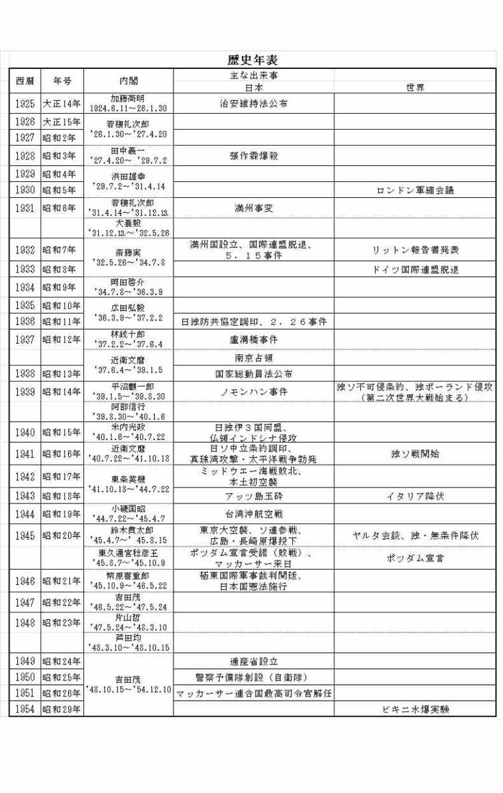
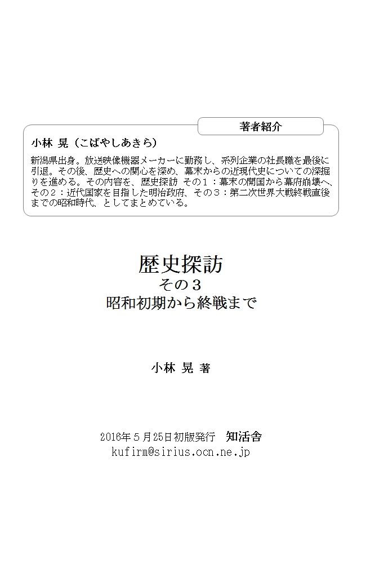

| 歴史探訪その３: 昭和初期から終戦まで | |
| 小林 晃 | |
| KUFirm (2016) | |
この歴史探訪その３では、日本近現代史シリーズの最終回として昭和初期から先の大戦で敗戦した直後の米軍による占領期までを取り上げることにしました。
日露戦争に勝利した結果、日本は軍国化に邁進し、遂には太平洋戦争を始めてしまいました。しかし、戦争の相手国アメリカとの国力差は歴然としていました。緒戦こそ華々しい戦果を上げましたが翌年からは次第に劣勢に陥ってしまいます。それでも三年八ヶ月もの間、戦い続けることになりました。
日本政府指導者は、日本本土が壊滅的な状態に陥ってようやく終戦を決意したわけです。その終戦に至るまでの経過と、荒廃した日本を占領した米軍がどのような施策を打ってきたのかについて探訪することにします。
平成二十八年三月 小林 晃
日露戦争により日本が勝利した結果、ロシアから満州の権益を獲得して日本の満州支配が始まりました。一九〇五年（明治三十八年）日本は満州に関東総督府を設置し、翌年には国策会社の南満州鉄道株式会社（満鉄）を設立しています。そして第一次世界大戦に勝利すると、さらに満・蒙の支配を強め、一九一九年（大正八年）には満州の防衛と満鉄の警備を目的とした関東軍を設立しています。この関東軍が後に日本政府の方針を無視して暴走することになっていくのです。
日本は、満州の植民地化と朝鮮の安定こそが仮想敵国ソ連への備えであるとして、武力による権益保護を図ろうとしていました。
一九二八年（昭和三年）六月、関東軍参謀河本大作大佐らは、中国華北軍閥張作霖の乗っていた列車を爆破しています。河本大佐らは、当初は張作霖を操って満州の独立をしようと企てていたのですが、張が従わなかったため殺害したのです。
昭和六年九月十八日夜、関東軍はさらに奉天郊外柳条湖付近の南満州鉄道線路に爆薬を仕掛け爆破しています。その爆破が中国軍による仕業であると主張し、部隊を出撃させ満鉄沿線を制圧しました。
それが、いわゆる満州事変の始まりでした。日本政府は国際的な反響を恐れ事態の不拡大を決めたのですが、関東軍はその決定に従わずに無視し、ほぼ四ヶ月半で中国東三省の主要都市と鉄道沿線の地域を占領してしまいます。この間、関東軍は、高級参謀板垣征四郎と参謀石原莞爾らを中心に「満蒙領有論」を唱え、軍政をしいて満州の植民地化を推し進めます。
こうした日本の満州侵略に対し、中国国民政府は国際連盟へ提訴します。その結果、国際連盟から「リットン調査団」が派遣されます。その調査団の派遣中の昭和七年一月に、関東軍は日本人僧侶の襲撃事件を演出して上海を占領する上海事変を起こします。国際的な疑惑をそらす目的でした。そんな経緯を経ながら日本は、昭和七年三月一日、溥儀を担いで満州国を樹立しました。
リットン調査団は昭和七年十月に報告書を発表し、日本の主張を否認し列強による東三省の共同管理を提案します。そして、それに基づく「対日勧告案」が昭和八年二月国際連盟総会に上程され、四十二対一（棄権一、欠席十二）で可決されます。その可決を受けると、日本全権松岡洋右は隋員を率いて総会場を退場し、三月二十七日、日本は国際連盟から脱退してしまいます。
満州は、万里の長城より北の地域でロシアとの国境に挟まれ、東は朝鮮半島に接する中国東北部（現在の遼寧省、吉林省、黒龍江省、内モンゴル自治区東部）にまたがる日本の三倍もある広大な地域です。
日本は、一九三二年（昭和七年）「五族協和」、「王道楽土」の理想郷をスローガンに満州国を設立します。実態は傀儡政権ですが、独立国家としての正当性を持たせるべく、清朝最後の皇帝である愛新覚羅溥儀を元首としました。鉄道交通の中心であった長春を「新京」と改め、そこを国都と定め、大規模な都市建設をスタートさせました。その結果、東京では実現できなかった南北をつらぬく大街と東西を走る大路による舗装道路できちんと区画された近代的な都市が荒野に出現しました。現在でも日本統治時代の建物が新京、奉天、大連、ハルピンなどに残されて使用されています。また南満州鉄道（満鉄）の大連と新京間（約七〇〇Ｋｍ）を八時間三十分で結ぶ世界に誇る超特急の「あじあ号」を走らせました。
農村部には、十万戸の農家がありました。そこで日本人に提供された土地は、未開墾のものも多く、使用可能な農地も現地農民から取り上げたものか安値で買い上げたものであったため、土地をめぐる騒動が頻発する状態でした。加えて気候的にも厳しく、真夏は三十度以上、真冬は氷点下三度から四十度にもなる過酷な土地柄でした。その上、日本の侵略に反発する武装ゲリラ集団や強盗集団が来襲するため、拳銃を手にしながら農作業しなければならない地域も少なくありませんでした。
一九〇六年に満鉄が設立されます。その初代総裁として後藤新平が就任しています。この満鉄とは、撫順炭鉱の開発、鞍山製鉄所の製鉄業、農林牧畜業、ヤマトホテルの経営、航空業、さらには上下水道の整備、電力・ガスの供給から学校、病院、図書館の建設など、鉄道沿線のインフラ事業を一手に引き受ける八十余りの企業を傘下に持つ一大コンツェルンでした。いわば日本政府そのものでもありました。
昭和七年の建国以来、満州国の国務総理（首相）や国家機関である各省のトップには、満州人が就任しています。しかし実務を仕切ったのは、本土からやってきた有能な日本人官僚達でした。総務庁が満州国政府の実務権限を担い、その総務長官には日本人が就いて事実上行政の頂点である総理大臣の役目を果たしていたのです。さらに事実上の支配者は関東軍であり、東条英機、星野直樹、松岡洋右、岸信介、鮎川義介の五人が満州国を牛耳る「弐キ、三スケ」と称されていました。
満州国が産声をあげた当時、日本国内は大恐慌で絶望の淵にありました。そのため、零細農民、土地を持たない小作農、農地を相続できない次男、三男達は、政府の移民政策に沿って新天地に明日を求め積極的に移住して行ったのです。まず国内の恐慌対策と満州国の治安、国防を目的として、武装移民団が試験的に送られます。それに続いて第二期満蒙開拓団の本格的な移民がスタートしました。満州開拓移民の総数は、二十七万人とも三十二万人ともいわれていますが、彼らの日常は、「右手に鍬、左手に銃」という状態で、土と反日勢力双方に立ち向かうことを余儀なくされていました。
そんな満州帝国は、ある意味、日本人が夢見た壮大な理想郷建設の「実験国家」でした。しかしその後の日中戦争や太平洋戦争の拡大は、満州の開拓移民たちの夢を打ち砕いてしまいます。北方はソ連国境に接し、内部では中国匪賊や反日勢力との緊張を強いられる日々が続き、理想郷作りどころではなかったのです。
昭和二十年八月九日対日参戦したソ連軍が、満州の北、東、西の三方面から同時侵攻してくると、関東軍はひとたまりもなく敗走してしまいます。関東軍は、南部戦線に兵隊を引き抜かれ弱体化していたのです。そのため日本人居留民たちは、ソ連軍による殺傷、強姦、略奪などの目に余る行為と、開拓団に恨みを持つ中国人による襲撃に曝されてしまいます。逃げ遅れた人たち約六十万人は、シベリアに抑留され、劣悪な環境の中での労働を強いられました。その結果、約六万人もの命が奪われています。
中国大陸の東北部に、かつて存在した満州国という名の幻影は、その終焉においても日本人に多くの重荷を背負わせたのでした。
日本に続き、昭和八年十月にドイツも国際連盟を脱退します。日本陸軍はこのナチスドイツに接近し、社会主義国ソ連の封じ込めを目的として「日独防共協定」を一九三六年十一月に調印します。その一年後には、ドイツのヒトラーの要求で、ムッソリーニ率いるイタリアも加え「日独伊防共協定」が成立します。それが一九四〇年（昭和十五年）には「日独伊三国同盟」へと発展し、日独伊三国による枢軸体制となったのです。
一九三九年八月、そのドイツがソ連と「独ソ不可侵条約」を結んで世界を驚かせました。直後の九月にはポーランドに侵略し第二次世界大戦の火ぶたが切られたのです。
そんなヨーロッパにおけるドイツの快進撃に刺激され、日本では、親米英的な「旧体制」を打破し「高度国防国家の建設」、「東亜の新秩序建設」に向け新体制を築かなければならないとする革新派が台頭してきます。その結果が、ナチスドイツばりの強力な一党独裁の政治体制を目指す「大政翼賛会」の発足でした。その総裁には近衛文麿が就き、ここに政党政治は終わりを迎えてしまいました。この第二次近衛内閣で外相に就任した松岡洋右は、アメリカに対抗することが緊要として三国同盟を推し進めました。
その後、青年将校の反乱事件、教育や世情の動き、それに軍部の暴走など軍国主義への邁進、世界情勢に乗り遅れまいとする軍部主導により、日本は対米開戦へと転がり落ちてゆくことになりました。
昭和七年五月十五日、五．一五事件が発生します。国家改造運動（軍部主導政権を目指す運動）の渦中にいた海軍青年士官らと陸軍士官学校候補生、農民有志が東京市内で決起行動を起こし、犬養毅首相を暗殺してしまいます。
これを契機に日本の議会政治が機能しなくなり、軍部が主導権を持つことになったのです。
事件にかかわった陸軍士官学校候補生十一名に対する軍法会議が、七月二十五日から九月十九日までの間に八回にわたり開かれました。しかし、まだ二十歳になったばかりという若い被告達に対する減刑の嘆願運動が高まり、彼らはテロ行為の加害者であったにもかかわらず一律禁固四年の軽い刑に処されています。
また海軍側においても、七月二十四日から九月二十日まで二十回の軍事法廷が開かれていますが、ここでも彼らの私心なき行為は誉められて当然と、減刑嘆願書が殺到するありさまでした。そんな嘆願書は、陸軍と合わせて百万通を超えたと云われています。軍事法廷では、首謀者に対し十年から十五年の刑が宣告されましたが、何れも昭和十五年皇紀二千六百年の恩赦で釈放されています。
この五．一五事件が「動機が正しければ何を行っても許される」という国論の生まれる端緒となりました。すなわち「私純の情こそが尊い、無私の精神に優るものはない」という考えです。
昭和十一年二月二十六日には、青年将校による軍事クーデターである二．二六事件が発生しています。
陸軍の二十代から三十代の皇道派青年将校たちと、それに行動を共にした下士官および兵士およそ千五百人が、天皇の側近である元老、重臣、軍閥官僚、政党などの言動が国体の飛躍を阻害しているとして反乱を起こしたのです。彼らは、内大臣佐藤実、蔵相高橋是清、教育総監渡辺錠太郎を射殺し、侍従長鈴木貫太郎に重傷を負わせました。（高橋是清が暗殺された自宅は、現在東京都立小金井公園内に移築保存されています）
天皇と海軍は彼らを反乱軍と断定し、投降を命じました。その命令に従い下士官、兵士は帰順します。将校たちは軍法会議にかけられ、弁護士もつけられないまま審理を終え、直ちに銃殺されています。
この二．二六事件後、陸軍内部で皇道派と派閥争いしていた統制派が発言力を増し、陸軍大臣寺内寿一や陸軍次官梅津美冶郎は青年将校に同調した将校グループを軍内から排除しました。さらに彼らは、陸軍大臣は現役軍人に限るとする軍部大臣現役武官制を復活させています。それが結果的には、自分達の気に入らない首相が推挙されると陸軍は陸相を推薦しないという方法で、その内閣を潰す特権を獲得することにつながったのです。
そんな変化が教育にも影響をおよぼし始めます。「日本の文化は西欧文化に勝る」、「個人主義を排し公民一体となる」、「武は文化を作ってきた」など、日本の皇国精神こそが、なによりにも優れる文化・文明であるとする皇民教育が、「修身」の教科書を通じて教え込まれるようになりました。この昭和八年から十二年までの僅か五年間に日本は大きく変調し、次々に国際紛争を起こしてゆくようになりました。昭和八年の教科書には、｢日本人は皆臣民であるが故に、一身を賭して天皇に忠孝を尽くし、命を捨てるというのが最高の道徳である｣と書かれています。このようにして昭和八年から、知性や個性よりも感情が先行し、事象や人物を客観的に見てはならないとの社会的風潮が確立されてゆきました。
参考文献として挙げた「昭和史七つの謎」で著者の保阪氏は、『日本人はなぜあのような感情、例えば｢天皇は神」だとか、｢日本は世界に冠たる国」だとか、｢東亜のために戦っている｣などという、客観性に欠け誰から見ても奇異と思われる時代を作ってしまったのだろうか、そんな思いが消えません。なぜ日本人は錯覚と陶酔の中に生きたのだろうか。感情をコントロールされるのは、されたほうも悪いということを肝に銘じておくべきであろう』と述べています。
参考文献
「昭和史七つの謎」 保阪正康著 講談社文庫
「外交なき戦争の終末」 ＮＨＫ取材班著 角川文庫
「アジア太平洋戦争の開戦と終戦について」 中央大学 佐藤元英教授の講演
「入門太平洋戦争」 二〇一二年八月四日発行 洋泉社
「歴史街道」 二〇〇八年一二月号 ＰＨＰ研究所
昭和十四年(一九三九年）春から夏にかけて、日ソ両軍は、夫々の衛星国である満州国とモンゴル人民共和国（外蒙古）の間に広がる国境係争地域で宣戦布告なき戦争を繰り広げていました。太平洋戦争直前のソ連との大規模な戦いでしたが、宣戦布告もなく事件扱いとなっています。この事件は戦後の東京裁判でも取り上げられました。そこでソ連が「野望を抱いた日本軍の侵略をソ連軍が完膚なきまでに叩いて拒んだ」と主張したため、戦後の教科書にもそう書かれ語り継がれてきました。しかし平成三年（一九九一年）ソ連崩壊後に公開された機密文書によれば、その定説は間違いであったようです。そんな新史実も紹介します。
満・蒙国境においては、一九三五年から一九三九年にかけて百八回（日本側の記録）にものぼるソ連による満州への侵入・発砲事件が起きています。国境守備の第二十三師団（小松原中将）は創設間もなく経験不足であったことに加え、南日本出身兵が主体で冬季の酷寒（マイナス五十五度にもなる）に慣れていなかったこと、さらには装備も旧式であったことで、決して優秀部隊と評してもらえるものではありませんでした。関東軍の辻正信参謀は「お互いによく知り合っておらずヤカンと鍋だけで生活を始めなくてはならない新婚夫婦みたいなもの」とこの師団を評しています。関東軍作戦主任参謀の服部卓四郎中佐は東京裁判で「この地帯に十分な兵力を当てようとすると主戦場での兵力を犠牲にしなければならなかった。そこで全般の状況を考えた上で、我々は最小限の数にとどめたのである。もしかすると最小限を下回る危険を冒していたのかもしれない。従って作戦思想は全面的に防衛的なものでありました」と述べています。
最初の大規模な事件は、一九三九年五月四日に起きました。五十名余りの外蒙古騎兵隊が、ノモンハンのバルシャガル西高地に陣地を構築し始めたのです。それに対し、満州国軍部隊と十六名の国境警備兵が十時間にわたって交戦しました。その結果、外蒙古兵側に十五名ほどの死傷者が出て、彼らはハルハ河対岸にまで撃退されています。
この地域は、満州国（日本）側がハルハ河までを領土と主張したのに対し、外蒙古（ソ連）側がそれより東二十Ｋｍから二十五Ｋｍの地域に国境線があるとして、お互いの主張が食い違っていたのです。そんな地域での衝突でした。
大本営は、日中戦争の解決に向けて全力をあげているこの時期に、北方で重大な紛争を起こすべきではないとしました。作戦行動が可能とはいい難い二線級の師団が、何の価値もない場所で大規模な戦闘に巻き込まれるのは愚の骨頂だと考えたのです。そんな戦いに勝つためには、関東軍の現有勢力をはるかに上回る機械化、装備、輸送力が必要なことを認識していたのです。
そんな大本営の意向に反し、日満軍の騎馬兵約六百名が五月十四日にノモンハンに前進、ホルステン河右岸沿いに進軍します。日本軍機も絶えず外蒙古上空を侵犯しました。これを受けソ連・蒙古軍はハルハ河を渡り、ノモンハン南西十五Ｋｍの地点に進出して日満軍を攻撃して来ました。翌十五日、日本の単発軽爆撃機五機が爆弾を投下し、さらに低空から機銃掃射を加えたことで、約四十名の死者が出ています。戦闘は五月二十五日から二十九日にかけてエスカレートし、両軍共に約二千名の兵力で、ハルハ河右岸の防衛線を巡って交戦し、双方共に約二百名もの戦死者を出しています。六月中旬、繰り返すソ蒙軍の空爆に対して関東軍は、ハルハ河を渡河して外蒙古領内に入り、五月の交戦時のように撃退するのではなく、むしろ退路を断つ戦術を取ったのです。
六月二十二日、ソ連機九十五機と日本機百二十機が外蒙古領上空で交戦し、日本側は三十一機、ソ連側も十二機を失っています（ノモンハン事件全体を通じてソ連側と日本側の損失は双方の発表に大きな違いがあり正確な数字は不明です）。
大本営の意に反して関東軍は「親の心子知らず」の振る舞いを続け、六月二十七日には外蒙古領内に入り込み、タムスク飛行場を空爆しています。当然、大本営は、関東軍に日本を戦争へ追い込む権利があるのかと腹を立てますが、板垣陸相はこれを放置します。七月に入り日本兵一万五千名は、ハルハ河に仮橋を作り、西岸へ渡河しました。仮橋は脆弱なため、戦車隊はハルハ河を渡河出来ませんでした。それに対してソ連軍は約千両の戦車・装甲車で迎え撃ち、戦車・火砲・重兵器を持たない日本軍は、ちっぽけな小火器・手榴弾・軽機関銃・火炎瓶で戦っています。
火炎瓶とは、サイダーの空き瓶に砂を三分の一ほど入れ、ガソリンで残る部分を満たし、小銃清掃用の木綿の布の切れ端を瓶の口に詰めて栓としたものです。その栓の芯にマッチで火をつけて戦車に投げつける原始的な武器です。火炎瓶が敵の戦車に当ると瓶が割れて中身のガソリンが飛び散り、太陽と車両の熱で、ちょうど新聞紙が燃えるようになります。戦車の底部から炎が上部に達した時にガソリンタンクに引火すると戦車は炎に包まれ炎上します。その仕組みは、三十八度以上の灼熱下では大変効果的でした。しかし戦車が至近距離まで近づいた時に投げつける必要がありました。そんな肉薄攻撃は、死を覚悟する必要がある戦術でした。
日本軍は、七月三日に弾薬不足の状況になったため、四日の夜中にハルハ河右岸へ撤退（日本軍は撤退という言葉を嫌い転進と言いました）しました。ハルハ河右岸へ進駐した敵は、ピアノ線を敷いて駆動輪に絡んで動けなくなった戦車に砲火を浴びせて餌食にする戦術をとりました。
日本陸軍の規則では、たとえ戦車が破壊され動けなくなっても戦車を放棄することは許されませんでした。そのため搭乗員は、最後の弾丸を自決用にとっておき戦車と運命を共にしました。
七月十日、関東軍は、戦車部隊の引き上げを命じました。これ以上、戦闘に参加すれば関東軍の「虎の子」である戦車部隊が行動不能になることを恐れたのです。第二十三師団の指揮を取る小松原と戦車部隊の指揮を取る安岡は共に士官学校同期生であり、共に中将であったことから「屋上屋を重ねる」ものとの判断でした。八月一日、戦車部隊の主力は無蓋貨車で南満州へ帰還しました。
日本の軽戦車や中戦車に搭載されていた短放射低初速の三十七ミリおよび五十七ミリカノン砲は、目標へ高炸薬の砲弾を発射できるため、歩兵支援任務には優れていました。しかし対戦車の戦闘では、射程や破壊力、装甲貫通力においてソ連のＢＴ(ベーテー)戦車およびＴ二十六型戦車に比べ格段に劣っていました。
日本の戦車は、歩兵との協力を第一の任務としていたため、速度と装甲の厚みは二の次として設計されていました。ソ連のＢＴ戦車はキャタピラ走行でも時速四十Ｋｍから五十Ｋｍ、車輪走行であれば最高時速七十八Ｋｍが出せると言われていました。それに対し日本の戦車は、キャタピラ走行のみが可能で、時速も僅か二十五Ｋｍでした。その上、日本軍の八九式中形戦車でも装甲板の厚さは、十五ミリから十七ミリ、軽戦車に至っては八ミリから十二ミリしかありませんでした。そのため初速の速いソ連軍の四十七ミリ戦車砲や同口径の速射砲による徹甲弾に、やすやすと貫通されてしまいました。また、ソ連軍は火炎放射戦車や水陸両用戦車を持っており、ノモンハン戦の最終段階では重戦車も登場させてきました。要するに、日本軍はどの分野においてもソ連軍に対抗し得る戦車を持っていなかったのです。
大本営はソ連・蒙古が主張する国境線を尊重するよう関東軍に指示していますが、関東軍はハルハ河を満州国境とすることに固執していました。つまり、現在確保済みの場所から後退することなく、そこにトーチカを構築して冬の間もそこに前進部隊を駐留させる考えでした。しかしその考えには無理があり、関東軍のタカ派である辻参謀ですら、マイナス五十度以下になる雪の原野で冬を過ごすことは困難であり、ましてや攻撃計画を実行することは不可能である、と慎重論を展開していました。
一方で、なぜソ連・蒙古軍がハルハ河右岸の狭隘な地域に頑強にしがみつこうとしていたのか？・・・それは左岸の台地には水が無く、なんとしてでも河から水を得る必要があった・・・つまりは水の確保を賭けた戦争であったのです。
ソ連は本格的全面戦争のため、シベリア横断鉄道で軍需物資と兵員の輸送を着々と進めていました。第二十三師団はそれを見落とし、「シベリア鉄道の輸送端末駅から七百Ｋｍも離れているノモンハン地域まで膨大なトラックやトレーラーを動員して弾薬、兵員、燃料などの軍需物資を輸送している」とはまったく想像だにしていませんでした。
平沼首相は、ノモンハン事件を全面戦争に拡大するつもりはないと言明し、それに沿った論調が日本の新聞各紙に出ていたので、ソ連の指導者は非常に安堵したと言われています。
そんな中でソ連軍は、一九三九年八月二十日早朝から空と地上からの総攻撃をかけてきました。数百機の護衛戦闘機を伴なった百五十機を超す爆撃機が、日本軍の散兵線、高射砲や火砲の放列はもちろん、後方の予備部隊に対しても猛爆を加えました。地上でもあらゆる口径の砲を局限まで使った集中砲撃を開始しました。ソ連軍は、兵力二千名、トラック三百台、戦車五百両をホルステン河南岸へ進めました。
日本軍も二十一日、戦闘機八十八機、軽爆撃機二十四機、重爆撃機十二機、偵察機二十一機で、タムスクの敵飛行場を爆撃し各種飛行機九十七機を撃破したとしていますが、実際は六月の日本軍空襲後に哨戒飛行と対空火器が改善されていたため、それほど大きく成果が上がらなかったようです。
ソ連軍は、中型戦車を戦場に投入してきました。それに対する対戦車地雷は効果が乏しく、またその戦車が網で車体防護されていたため火炎瓶での攻撃が効きませんでした。
日本軍における命令服従は極めて厳格でした。それは戦闘のテンポが緩慢な時であれば良いのですが、事態が流動的でしかも激しい戦闘が行われる場面では、しばしば取り返しのつかない結果につながりがちでした。強力な戦車を前面に圧倒的な火力で攻撃してくる敵に対し、払暁・薄暮あるいは夜間に白兵戦で肉薄しようとする戦術では、とうてい近代戦を勝ち抜くことはできませんでした。関東軍は、八月二十七日午後十一時から残存兵を集めて、どこを見ても敵だらけのホルステン北河地区へ無謀にも突撃しました。その結果、残る兵士が四百名ほどになるという壊滅状態となりました。
大本営は、ソ連軍の主張する国境まで日本軍が撤退すれば、ソ連は満州までは攻めてこないだろうと判断し、改めて関東軍に撤退命令を出しました。
これに対して、関東軍は戦場に残されている友軍の遺体や兵器を回収することを主張しています。関東軍の植田司令官は、戦場掃除すらしないのでは非情なばかりか、関東軍の威信と伝統の失墜を招くとして、自らの責任において最小限度の戦場掃除をすることをお許し願いたい、と懇願しました。
大本営が承知しなかったため、植田司令官は自分を更迭し新司令官のもとで処理してほしい、とさらに強く申し出ました。大本営は天皇に上奏し、天皇は植田司令官に深い同情を示されました。しかし大本営は、数多くの遺体を放置することが皇軍の将兵に対して好ましくない心情をもたらすことは確かであるが、この段階で攻撃に出ても得るところがないばかりか、再び甚大な被害を喫するであろうし、ひとたび冬が到来したときには進退の機を失い、不測の危険に陥る恐れが大であるので司令官の意見は採用しない、と天皇に説明し承諾を得ました。
この結果、関東軍の司令官を始め参謀の多くが解任され、それによって戦闘は終結しました。
一九三九年五月に端を発したノモンハンにおける大規模な戦闘は、九月に入りようやく停戦することになります。九月九日から外相の東郷とモロトフによる停戦交渉が始まります。モロトフは、外蒙古の主張する五月一日現在の国境線を受け入れることを絶対条件としましたが、日本側は国境問題は棚上げにして前線での敵対行動を止めることを主張しました。双方の主張に違いはありましたが、九月十五日午後十時（モスクワ時間）、日本側の提案を受け入れるとモロトフが回答してきました。
国境線の画定については、日本・満州側とソ連・外蒙古側から夫々二名の代表を出して構成する合同委員会を設立し交渉することになりました。日本とソ連の停戦協定の内容は次の通りでした。
一．日満軍およびソ蒙軍は、モスクワ時間九月十六日午前二時を期し一切の軍事行動を停止する。
二．日満軍とソ蒙軍は、モスクワ時間八月十五日午後一時、その占めていた線にとどまるものとする。
三．現地における双方の軍の代表は、直ちに本合意の実施に着手する。
これを受けて九月二十二日から遺体の捜索と回収が本格的に始まりました。九月三十日までに総計四千三百八十六体が回収されました。しかし、ソ連軍が既に構築した陣地には入れず、多くの遺体は戦場に残されたままでした。
十二月初旬ソ連のチタで国境線画定の会議が開催されました。十二月七日から二十五日にかけて交渉は三日おきに計八回行われました。停戦時における両軍の地域は、日本側が主張する満州国領内に深く入り込んでいました。交渉は平行線のまま一九四〇年一月に次の開催地ハルピンに移されています。ハルピンでも一月七日から三十日まで交渉は八回にわたり行われています。日本側がハルハ河の国境線についての主張を取り下げなかったため交渉は難航し、合意を得ないままソ連代表はハルピンから引き揚げました。
日本政府は七月第二次近衛内閣に変り、外相も東郷から松岡に変わります。そして八月三日から二十四日に再びチタで蒙古と満州国の専門家も同席した六回にわたる交渉が行われています。
現地調査が始まったのは九月初旬で、完結したのは一九四二年五月十五日でした。結局この国境画定交渉は、ソ蒙側の主張する国境線で解決しています。
当時、ソ連駐在日本大使館付武官補佐官として勤務していた林三郎少佐は、任務に失敗した日本陸軍将校の責任の問われ方について次のように痛烈に批判しています。
「ノモンハン事件に最も大きな影響を与えた実質的な責任者であった関東軍司令部第一課（作戦）参謀の多くは、他の閑職に転勤を命ぜられたに過ぎない。それら転勤者たちは、その後いつの間にか中央部の要職についている。中には大本営作戦課の重要ポストを占めた者もいる。要するに申し訳の左遷だったのである。これが陸軍人事行政の一側面なのだ。陸軍部内での信賞必罰は公正なものではなかった。積極論者が過失を犯した場合、人事当局は大目に見た。一方、自重論者は卑怯者扱いにされがちで、その上過失を犯せば手厳しく責任を追及される場合が少なくなかった」。
林少佐が指摘したように、ノモンハン事件の責任者たちがいつのまにか大本営の作戦部に勤めるようになり、後の太平洋戦争に対する有力な開戦論者になったのでした。
反対に、ノモンハン事件の前線で戦った将校たちの境遇は、残酷かつ非情極まりないものでした。日本陸軍は、人命を大切にし注意を払い慎重に構える将校たちを排除する傾向にありました。そのような態度は勇気の欠如を示すものであるとされ、広範囲にわたり厳格な行動規範が繰り返し教え込まれていました。公然と自説を披露するようなことは、情け容赦なく抑圧されていたのです。ノモンハン事件で自決あるいは退役させられた将校も数多く、この事件が話題とならぬよう隠蔽されていました。
一九四〇年の国会における「政府は秘密主義を止め国民に真実を知らせるべきだ。秘密主義に隠れて国民の耳目を塞いでいるのではないか」との議員発言に対し、米内首相は「言論を尊重するつもりでありますが、ただ軍事上、外交上、経済上における機密を要し一般に公表することを不適当とする事項のあることは、ご承知願いたい」と答えています。さらに衆議院議長も、ノモンハンについての議論をする時には「発言にご自重願いたい」と注意をしています。
このような機密漏えいに対する政府の考え方は、二〇一五年の安保法案審議における国会答弁や官房長官談話にもよく見られます。不透明な発言で国民に真実を語らないことは現在においても危惧される問題と言えるでしょう。
昭和期の日本の軍隊では、慎重さを敗北主義と決めつけ、外交を軽視し、文官による干渉を許さないとする独善的・攻撃的な考え方が支配的となっていました。とりわけ関東軍は、ソ連に備える重要性から大事にされ甘やかされていました。ソ連への対抗上、関東軍の強さが誇大宣伝されていましたが、後にノモンハン事件を書いたクックス氏には「組織も装備も補給にも全く関心を払わない二流か三流の軍隊だった」と酷評されています。
このノモンハンにおける関東軍の敗退で北の門戸が閉じられたことが、その後日本軍が南方へ戦力を向けることになった理由でもある言われています。
日本軍は、現代戦における火力、機械力、そして航空力の重要性に目をつむり、それらの差は高い士気、敢闘精神、大胆不敵といった無形の要素で埋め合わせ可能であると考えました。その考えが、ノモンハン事件だけでなく、太平洋戦争の全期間にわたり、銃剣による自殺的肉薄攻撃で生命を浪費することにつながりました。一九〇五年の日露戦争における二〇三高地で乃木希典大将が犯した莫大な人的損失の過ちを連綿として続け、南太平洋の島々で万歳突撃や玉砕を繰り返して尊い命を失っています。戦闘状態の深刻さや負傷の重さに関係なく日本軍将校は降伏を拒み、その結果、自軍の連隊旗や火砲や戦車を守るため最後の一兵まで命を犠牲にしました。
ここまでは、ノモンハンの戦いは、近代的なソ連軍の機械化部隊に対し、日本軍が無謀な銃剣突撃で大惨敗を招いた、という内容でした。近・現代史というものは、大抵五十年以上経たないと信用できる資料や証言が現れないと言われています。日本の昭和史も終戦時、資料の大量焼却や散逸、それに東京裁判の影響もあって「戦前の日本は愚かにも世界に侵略戦争を仕掛けて破滅した」というのが定説となっていました。
事件から五十二年経った一九九二年、ソ連が崩壊した後グラスノスチ(情報開示）により新史料が現われました。それには、日本側の死傷者が一万七千四百五人に対して、ソ連側は二万五千六百五十五人、戦車喪失も日本側二十九台に対し、ソ連側は八百台、航空機は日本側百七十九機に対して、ソ連側は二百八十機の損失という数字が示されています。この史料によれば、日本軍は敗退どころか、むしろ勝っていたことになります。しかし、既に書いたように、戦場における損害の数はいずれにせよ正確なものではありません。
ノモンハンでソ連軍を指揮したジューコフ司令官は、第二次世界大戦ではドイツと戦いました。その彼が後に「ドイツ軍は日本軍に比べ装備が良く、兵士としても優秀だったが、全体として日本軍が有する真の意味での狂信性には欠けていた」とノモンハンでの日本軍との悪戦苦闘ぶりを取材記者に語っているほどです。
レーニン死後のソ連では、スターリンが独裁的権力を手中に収めます。一九三〇年代に入ってのことです。ソ連にとって、その当時の日本は侮り難い軍事力を有する反共産主義国であり、直接国境を接する存在でした。一九三一年の満州事変は、ソ連勢力の南下を恐れて日本が満州での権益を守ろうとして起こしたものであることは既に述べた通りです。
一九三六年十一月、日本とドイツは「日独防共協定」締結します。これに対し、ソ連は東西から挟撃を受ける脅威を感じました。現に、ドイツ系住民が多く住むポーランドのダンツィヒ(現在のグタニスク)で一九三九年五月十三日反ポーランド暴動が起きると、極東ではノモンハンでの激戦が始まっています。
スターリンは、広い国土の両端から攻められては極めて不利と考え、独裁者ヒトラーと話をつけ「独ソ不可侵条約」を結ぶことに成功します。一九三九年八月二十三日深夜に条約が締結されました。世界が驚愕する出来事でした。それはノモンハンで正に死闘が繰り広げられている最中でした。ですから日本にとっても驚きの出来事で、平沼麒一郎首相が「欧州情勢は複雑怪奇なり」という言葉を残して内閣総辞職しています。
日本は、これで欧州での憂いを断ったソ連が大挙して満州に攻め込んでくる恐れありと判断します。その欧州では、ドイツが九月一日ポーランドへ侵攻します。それを受け、ポーランドと相互援助条約を結んでいた英・仏がドイツに宣戦布告し、それによって第二次世界大戦が始まっています。
スターリンは、欧州で大戦が始まったので、まず極東における日本の脅威を取り除くことが先決と考えました。そのために、大軍を一挙に集中的に投入して日本軍を徹底的に叩きのめす策を採りました。要するに日本に北進策を諦めさせて南進策を採らせば、日米が戦うことになるだろうとの読みでした。
ドイツは、ソ連に対してポーランドへ侵攻するようにしきりと働きかけますが、ソ連は英・仏両国に対してドイツとの戦争では中立を守ると確約し、ドイツの策には乗ろうとしませんでした。しかし日本とのノモンハンでの停戦協定が結ばれるや、その三日後にはソ連軍がポーランドとの国境を超え侵略を開始します。
ノモンハン事件において、有名なソ連のスパイ、リヒャルド・ゾルゲの暗躍があります。
ゾルゲは、昭和十三年(一九三八年)十一月に「日本はソ連との戦争について北からの攻撃を想定しており、外モンゴル方面からの攻撃は予想していない」とか、一九三九年一月には「日本軍はソ連に戦争を仕掛ける気はない。ただし春には軍事的挑発に出る企てがあるようだ」と、ソ連の政策を決定する上で極めて重要な報告をモスクワに送っています。
一説には、ゾルゲの配下に三百人のスパイがいて、東アジア一円で活動していたようです。その内、日本で活動していたのが「ラムゼイ・グループ（ゾルゲ諜報団）」でした。その中にブーケリッチや宮城与徳らがいます。彼らはノモンハン事件の最中、新聞記者などに扮して戦場に入り、関東軍が八月二十四日に総攻撃に出る予定をつかんでいます。このブーケリッチの報告を受けたゾルゲは、モスクワに「日本軍の先手を取り、後腐れの無いように徹底的に叩くべき」と進言したとされています。
八月の戦闘で、日本軍は一万八千人の死傷者が出たと発表しましたが、一方のソ連は死傷者七千人とラジオで発表します。これを受け日本は「負けた」と思い、さらに独ソ不可侵条約により「西方での後願の憂いが無くなったソ連が大軍を極東へ移せるようになった」と勝手にに誤解し、いわば「ベタ降り」の姿勢で対ソ停戦交渉を急いだのでした。
このノモンハン事件を通じて思い知らされることがあります。それは、ソ連軍が有する圧倒的な機械化部隊と長距離輸送力の威力を、第二次大戦の終戦間際における戦局判断に生かせなかったことです。ノモンハン事件でこれだけの体験をしていながら、第二次大戦の終了間際にソ連が参戦してくる脅威の予測に活かすことができなかったのです。
ソ連に限らず、デマやウソの情報を流す諜報・情報操作は国際社会の常識です。そんな力も無い指導部の下、かつ乏しい装備の中で、それでも国を守るため命を投げ打ち果敢に戦った日本人将兵のことを忘れる訳にはいきません。
参考文献
「ノモンハン」 アルヴイン・Ｄ・クックス著 岩崎俊夫訳 朝日文庫
「歴史街道」 平成二十五年五月号 ＰＨＰ研究所
一九三七年（昭和十二年）七月七日の盧溝橋事件に続き、八月には上海事件、十二月に南京占領と中国侵略を進めた日本は、宣戦布告なしの事変として中国との全面戦争を展開していったのです。一九三八年十月、日本軍は中国南部の広東・武漢を占領しますが、中国国民政府の蒋介石は漢口さらに重慶へ遷都して徹底抗戦を続けます。このように日中戦争の泥沼に入り込んだ結果、遂に中国に大きな権益を持つアメリカと対立することになり、太平洋戦争へと突入していくのです。
一九三五年六月、北支駐屯軍司令官梅津美治郎は、中国国民党代表の何応欽と協定を結びました。その内容は、一．河北省の国民軍撤退、二．河北省の国民党機関閉鎖、三．反日運動禁止 の三項目からなり、中国の非武装化を狙ったものでした。
盧溝橋事件勃発後の一九三七年十月、国際連盟は日本の行動を不当かつ非合法であると論難するや、米国ハル国務長官も日本の行動は平和や動議など諸原則を犯すものと批判します。長引く日中戦争において蒋介石率いる重慶政府に対する米・英の物資支援ルート(援蔣ルート)を遮断するため、日本軍は一九四〇年九月二十三日から北部仏印へ進駐します。この進駐は米英を強く刺激しました。アメリカはフイリッピンを、イギリスはシンガポールを攻撃されると捉えたのです。
アメリカから屑鉄輸入を止められた状況の中、日本軍は資源確保のため一九四一年七月二十三日に南部仏印へ進駐します。それを受けるやアメリカは、同二十五日には、イギリスおよび蘭領印度シナとともに、日本に対する報復処置として在米資産凍結を断行し、次いで八月一日には石油の全面禁輸を実施しました。これがＡＢＣＤ(アメリカ、イギリス、中国、オランダ)包囲網です。日本にとって対中戦争の長期化に加え、元はといえば日本にその責があるこの包囲網が出来上がってしまいます。
悪化する対米関係解決の糸口を見つけるための外交交渉は、一九四一年三月から野村大使とハル国務長官の間で開始されました。
前述のように七月の南部仏印進駐により、アメリカ側の態度は硬化します。九月六日の御前会議では、十月上旬までに外交上の目途が立たなければ、対米・英・蘭戦争に踏み切ることやむなしと決定されました。
十一月五日、日本政府は来栖三郎特命大使に日本側最終二案の「甲」｢乙｣を携えさせてワシントンに向かわせます。十一月二十日に、野村・来栖両大使が米国のハル長官に会い、｢乙｣案を手交します。｢甲｣案は、三国同盟の義務履行の問題に関し日本側の｢自主的決定｣の主張をアメリカ側が既に了承したものとの前提に立ち、日華和平成立後の中国からの撤兵、仏印の領土主権尊重などを示し、それによって通商の合意を得ようというものでした。もう一つの｢乙｣案は、核心的な問題に絞る暫定的な取り決め案で、具体的にはアメリカの対日石油供給約束と引き換えに、日本軍の南部仏印からの撤兵を用意した提案でした。
この日本側の提案に対して、十一月二十六日アメリカ側から対案｢ハル・ノート｣が出されましたが、それは南京政府否認、中国および仏印から一切の軍隊の撤収、三国同盟否認など日本側として到底同意できる内容ではありませんでした。
それを受け、十一月二十九日には挙国一致の開戦を決意すべく八人の重臣（阿部信行・林銃十郎・岡田啓介・米内光政・若槻礼次郎・広田弘毅・平沼騏一郎・近衛文麿）の意見を聞く懇談会が開かれ、同午後四時からの大本営政府連絡会議において対米・英・蘭との開戦が決意されています。
十二月一日午前中の臨時閣僚会議、午後二時五分より午後三時四十五分までに宮中東一の間において政府側全閣僚、陸海軍両省軍務局長、統帥部陸海軍両総長および両次長に枢密院議長を加えた御前会議が開催されます。その席上、東郷外相は｢帝国ノ国策ト根本的ニ相背馳スルモノナレハ早晩衝突ヲ免レサルモノト認メラル・・・帝国政府ハ遺憾乍ラ茲ニ今次交渉ハ之ヲ打切ルノ已ムナキモノト認ムル次第テアリマス｣と断腸の思いで説明しています。皮肉にも戦争回避のため入閣した東郷が、戦争を望まない昭和天皇の御前において、志と矛盾する結果を報告しなければなりませんでした。大本営政府連絡会議で決定された十二月六日付｢帝国政府ノ対米通牒覚書｣は、東郷外相発、野村大使宛機密暗号電報第九百二号（長文のため十四分割）として十二月六日午後八時三十分から打電開始され、続いて第九百七号電報｢七日貴地時刻午後一時ヲ期シテ米側ニ（成ル可ク国務長官ニ）貴大使ヨリ直接御手交アリタシ｣との訓令電報も七日午後五時三分に打電されました。
ところが、ワシントンの駐米大使館側でタイプに手間取り、野村大使がハル長官に覚書を手交したのは、七日午後二時二十分（日本時間八日午前四時二十分）となってしまいました。
日本外務省は、真珠湾攻撃開始前に交渉断絶の最後通牒｢覚書｣をアメリカ政府に通告する予定でした。しかし結果的に、その通告は真珠湾攻撃を始めたワシントン時間の七日午後一時（日本時間八日午前三時）より一時間半も遅れてしまったのです。そのため開戦は無通告となってしまいました。
アメリカはこれにより、真珠湾攻撃を｢だまし討ち｣と痛烈に非難し、｢リメンバー・パールハーバー｣を国民的スローガンにして報復戦争を正当化したのです。
この無通告開戦については、佐藤元英中大教授による詳しい調査結果があります。そこには｢覚書｣の手交が遅れたことに対し、次のような興味深い意見が述べられています。それは、海軍側が奇襲攻撃による緒戦の重要性を意識しており、不意打ちによる奇襲攻撃もやむなし、と考えていたのではないか、というものです。海軍は十二月一日の御前会議で｢戦ニ勝ツ為ニ外交ヲ犠牲的ニヤレ｣と東郷外相に迫り、ハーグ国際条約で決まっている｢交渉打ち切り｣の事前通告は外交上必然であるとする東郷外相と意見を対立させています。これが即ち、駐米大使館の日曜日における暗号電報の翻訳やタイプの事務的遅れは日本政府側では織り込み済みだったのではないかとの疑惑につながっているというのです。一方米国においても、既にこの頃日本の暗号は解読できていて日本の開戦意図は筒抜けで、日本の「だまし討ち」をもって米国の参戦を合理化する意図があったとも云われています。
昭和十五年五月から、アメリカは日本がドイツ・イタリアとの枢軸体制に傾斜することに警戒を強め、しかも既に始まっている第二次世界大戦でドイツ軍がヨーロッパ全域を制圧しつつある状況下で日本に対する警戒を強めていました。
そんな警戒に関連する一連の動きとして、アメリカ海軍は太平洋艦隊を西海岸からハワイへ移転します。ハワイとアメリカ西海岸は四千キロもありますが、太平洋艦隊をハワイに移動させることでアメリカの対日警戒網を四千キロ前進させたことになります。ハワイがアメリカ海軍機動部隊の対日戦略拠点とされたのです。
昭和十六年十一月二十二日から二十四日の間に、南千島択捉島の単冠湾に日本艦隊が集結します。十一月二十六日朝には、主力の航空母艦六隻と航空機三百五十機を含む三十隻の艦隊がハワイに向けて進撃開始します。途中でアメリカや第三国の軍艦、商船、飛行機などに出会わさぬよう、冬季には海が荒れて船の航行が困難な北太平洋のアリューシャン列島の南を通り、ハワイの真北から入る北方ルートを選んだのでした。
進撃隊形は縦長なものにし、全方視界限度付近に三隻の潜水艦を潜行させながら、もし途中でアメリカ海軍の艦隊に遭遇した場合には素知らぬ顔をして引き返すことにしていました。
真珠湾攻撃は、十二月八日未明に開始されます。
第一次攻撃隊は、午前七時五十三分頃から八時二十五分までの約三十分間で予定通り攻撃し、母艦に戻っています。第二次攻撃隊は八時四十五分頃から九時四十五分まで攻撃して帰投しています。いずれもハワイ時間です。
日曜日の早朝だったこともあり、日本側の被害は第一次攻撃隊で九機、第二次攻撃隊で二十機が母艦に戻らず、特殊潜航艇は五隻沈没、死者は六十四名という犠牲でした。それに対し米側には、｢ネバダ｣、｢オクラホマ｣など戦艦四隻とその他一隻の撃沈、戦艦四隻、巡洋艦四隻、駆逐艦二隻その他一隻の大破、さらに航空機二百機の撃墜ないし撃破、死者二千四百名、負傷者千二百名と、大損害を与えました。
しかし、空母｢エンタープライズ｣と｢レキシントン｣やそれに随行する重巡洋艦がハワイを出港していて日本軍の攻撃から免れたこと、加えて石油貯蔵タンク群には全く攻撃が加えられなかったことが、アメリカにとっては幸いでした。
ルーズベルト大統領は、十二月八日を｢不名誉な日｣と呼び、翌日のアメリカ議会に日本に対する開戦を決議させています。
日本国内では、十二月八日午前七時四十分より枢密院審査委員会が開かれました。席上、まず嶋田海相より今朝来マレー方面、香港方面およびハワイ方面の米英軍と交戦状態についての報告がなされ、次いで東條首相から外務省起案の開戦理由骨子と同内容の宣戦布告奉請理由が説明され、原案通り宣戦布告することが満場一致で可決されました。続いて天皇臨席の下に開催された枢密院本会議では、鈴木貫太郎委員長から｢帝国ノ威信及自存ノ為｣の米英に対する宣戦布告は、やむを得ざるものと認めるのほかなし、との審査報告があり、その後、原嘉道議長が｢全員一致可決サレタリ｣と宣言しています。その時遠く離れた真珠湾において奇襲戦闘が開始されており、枢密院では開戦後に米・英に戦線布告することが可決されたわけです。
日本国民に対しては、ラジオを通じて対米・英・蘭戦争発起を発表し、引き続き東條内閣総理大臣の｢大詔ヲ拝シ奉リテ｣と題する演説、午後零時二十分｢帝国政府声明｣さらに｢日米交渉経過｣に関する外務省発表が放送されています。
東郷外相は、｢政府ニ於テハ八日午前零時ヨリ交戦状態ニ入レル建前ヲ執リ居ルモノト心得ラレ度シ｣と、満州国および中国の出先公使館長に知らせています。
この八日の午前零時は、日本軍がコタパル泊地入りした日本時間であり、真珠湾攻撃より七時間二十分ほど前になります。英領マレーのコタパルにおける攻撃は、対米｢覚書｣の手交予定時刻より約一時間早いワシントン時間の午後零時十五分に開始されています。この事実こそが陸軍の無通告開戦の底意を暴露しているものであると、二〇〇四年十二月刊行の中央公論に前述の佐藤元英中大教授が書いています。
米国ハワイのオアフ島にある軍港の真珠湾を攻撃する具体案を考えたのは、山本五十六連合艦隊司令長官です。山本長官は新潟県長岡市の出身で、現在故郷の長岡市内には山本長官の記念館があります。
山本は、大正と昭和にかけて二度のアメリカ生活を体験しています。初めは語学留学生として、二回目はワシントンでの駐在武官として大正十四年十二月から昭和三年三月まで滞在しました。こうした体験を通して、これからの時代は航空兵力の整備と石油の確保が求められると考えるようになりました。その後ロンドン軍縮会議の随員を経て、昭和五年十二月には海軍航空本部の技術部長となり、昭和十一年十二月の海軍次長になるまで一貫して航空畑を歩み続けています。日本海軍の航空戦備が拡充されていったのは、山本長官の尽力によるものでした。
昭和九年当時、山本は第一航空戦隊司令官になっていましたが、もし対米戦になったら空母の艦載機でハワイの太平洋艦隊とマニラのアジア艦隊を空襲する可能性について口にしています。現実味を帯びた内容ではなく｢もしそのような時は・・・｣という程度の話でした。ところが昭和十四年八月に海軍次官から連合艦隊司令長官に転じると、日本の航空兵力の充実によりハワイ攻撃も可能になったのでは、と言い出しています。山本長官は、大佐時代に駐米大使館付き武官であった経験から他の人たちよりもアメリカについて詳しく、開戦前には対米戦に反対する非戦派側にいました。それはアメリカの国力の現実を知っていたから故のことでした。「一年間は暴れてみせる」と短期決戦を口にしたのも、昭和十七年六月に軍令部の反対を押し切ってミッドウェー作戦を強引に進めたのも、米国の国力を知っていて戦争の早期終結の必要性を痛感していたからでした。
生前トラック島に在泊した旗艦大和の連合艦隊司令部で、「このままずるずると戦争が長引けば、到底勝ち目はない。自分は第一線部隊の指揮官でそんなことは出来ないが、誰か中央にいるものが戦争の収拾を図らなければならないのだがなあ、東條には出来ないだろう」と漏らしたこともあったとのことです。
日本にとっては、この真珠湾攻撃作戦が与えた「実力なき」勝利が、戦争指導者や国民の間に間違った勝利感として定着してゆく結果となりました。これこそが太平洋戦争の三年八ヶ月、日本社会を支配した錯覚になりました。
航空艦隊の参謀として真珠湾攻撃に参加した源田実氏は、彼の回顧録の中で以下のように述べています。
まず、全ての国策遂行に当たっては有形的要素、すなわち兵力とか錬度とか天象地象などにおいて、勝算がないままに無形の精神力だけに頼って一六勝負に出てはならないとし、次のように説明しています。当時の日本では、物力の足らないところは精神力で補うべしとし、それを計算に入れようとしていました。しかしアメリカ人とて、自分たちが精神力において日本人に劣っているとは思っていなかったであろうし、むしろ優っていたと思っていたかも知れません。つまるところ精神力には、算定の尺度などないのです。そんなものを独断で自分たちに有利に解釈し、それで国家の運命を決するような大事に踏み出すべきではありません。国家民族の運命は悠久です。十年や二十年の遅れや隠忍自重は、永遠な国家生命に比べるならば問題ではありません。国家の歩みは遅くても良い、安全でなければならないのです。
次に、組織としての方向決定上の問題であった航空主兵論と戦艦主兵論についても回想しています。戦争の結果から見るならば、明らかに航空主兵論が正しく戦艦は無用の長物でした。にもかかわらず日本海軍は誤った決定をしました。あの大きな戦艦が小さな飛行機に負けるとは、感情的に受け入れにくかったばかりか、都合の悪い方向に考えることをことさら避けた傾向があったのです。
重要な政策決定に当たる者は、自分個人の好みや感情、過去の経緯を一切捨て、理論と実験の成果を謙虚に受け入れなければなりません。戦艦大和や武蔵は、人類が作った最高級な戦艦で、これを設計した海軍の技術者、建造した三菱長崎造船所の従業員、就役後に乗り組んだ将兵らの優秀性は世界に卓越したものでした。しかし、武蔵が昭和十九年十月フイリピン海域で雲霞の如き敵飛行機隊の攻撃を受けた時には、武蔵が誇った十八インチ大口径砲も飛行機にはまったく効力のない武器でしかありませんでした。
方向決定は最高責任者の最も重要な仕事の一つであり、これを誤ればいかに優秀な兵器も人員も全て無に帰すことを銘記しなければならないのです、と源田氏は回想しています。
フイリピンに駐留中のマッカーサーは、一九四一年十二月八日（日）ワシントンからの電話で、日本が真珠湾を攻撃したことを知らされています。米国の真珠湾にある太平洋艦隊基地は、高射砲、飛行機、それに警報設備を備えていたので、日本軍隊は手厳しい敗北をきたすに違いないと思っていました。しかし、実際には米側が大損害を受けたことを知ることになります。
その真珠湾攻撃から僅か四時間後の午前十一時四十五分、圧倒的な勢力の日本軍機編隊がフイリピンのクラーク航空基地へ来襲します。フイリピンのアキ・ナルド将軍は、マッカーサーに対し、アメリカと日本の戦争のためにフイリピンが戦場となり、フイリピンのほとんどが日本軍に占領されている今、無駄な抵抗は止めるべきである、と進言します。さらに、日本はフイリピンの早期独立も約束している、とも言いました。
親米派のケソン大統領もアメリカ本国の支援が無いことに怒りました。当時、ワシントンが気にしていたのは、ヨーロッパ戦線であって対日戦争ではありませんでした。ケソン比大統領は、遂にルーズベルト米大統領に痛烈な手紙を送ります。その内容は、米国は即時にフイリピンに独立を与え、ついで日・米間の議定書でフイリピンを中立化すべし、という提案でした。
防衛力が粗末で小さく、しかも本国からの支援が乏しいマッカーサーは、幕僚、家族と共にマニラを捨て、パターン半島とその南のコレヒドール島に移ることを決め総司令部も移します。しかし、そこでも日本軍六万五千人の猛攻の前に八万人の米比軍は後退し、遂に一九四二年三月マッカーサーは暗闇の中、家族および陸海軍将校三十一名を伴って四隻のＰＴボート（高速魚雷艇）でコレヒドール島を脱出、三月十三日午前七時にミンダナオ島のカガヤンに到着します。そこでオーストラリアから迎えに来た爆撃機に乗り、オーストラリアへの逃避行をしています。あの有名な、アイ・シャル・リターン（Ｉ ｓｈａｌｌ ｒｅｔｕｒｎ ）という言葉はその時に記者団に発したものでした。
この挫折がバネになり、それ以降、日本軍打倒のため、全身全霊を傾けてニューギニアからフイリピンへと反撃したのでした。
太平洋戦争は、昭和十六年十二月真珠湾の奇襲攻撃（実際は英領マレー半島コタパルに上陸のほうが一時間早い）に始まり、マニラ、シンガポールおよび南太平洋の島々へ快進撃をすることで戦線を拡大しました。
しかしアメリカの反撃は予想以上に早く、開戦から半年後の六月五日、ミッドウェー海戦において、大惨敗を喫してしまいます。日本軍の暗号が解読されていたことや、ミッドウェー基地を攻略するのか、敵艦船壊滅を期すのか、作戦目的が曖昧であったという戦術上のミスなどが重なり、空母四隻と艦載機二百八十五機を失う結果を招来してしまいます。
それ以降、日本軍はガダルカナル島をめぐる攻防戦と、三次に渡るソロモン海戦の戦いに相次いで敗れます。米国の圧倒的な国力により、延びきった日本軍の制海権と制空権が奪われ、兵站能力に劣る日本軍は南太平洋の島々で全滅してゆきます。特にガダルカナル島では、上陸した日本軍への補給物資を積んだ輸送船が次々に撃沈され、戦闘による死者よりも餓死者や病死者が上回るという悲惨な戦いになりました。
昭和十八年後半から玉砕に次ぐ玉砕で、昭和十八年九月には｢絶対国防圏｣を設定するも一年経たない昭和十九年七月にはマリアナ諸島が米軍の手に落ちてしまいました。
一九四四年七月下旬、マッカーサーはハワイ真珠湾で開かれたルーズベルト大統領との会議に出席します。そこでフイリピンを素通りして台湾を攻撃するというワシントンの計画を聞かされます。それに対し、マッカーサーはワシントンの計画に反対しています。それは、南方からの補給物資の流れをフイリピンで空・海から封鎖することで日本の産業を麻痺させることが出来るし、もし台湾を占領しても住民が敵意を持っている点で前進基地として使えるかどうかも疑わしい、という理由からでした。結局マッカーサーの主張が通り、アメリカはフイリピン奪回へ突き進んで行きます。
マッカーサーの構想は、ニューギニアおよびフイリピンを経由して日本へ侵攻する、そのためには自分の指揮下にある陸軍が主として攻撃し、海軍は輸送と船団護衛のほか海浜攻撃や海上交通保護など陸軍の支援任務にあたるべき、というものでした。つまり自分が主役で、海軍は脇役という内容でした。
一方ニミッツ提督率いる海軍は、開戦当初の大敗北をなめた雪辱と面子にかけて中部太平洋の直線横断作戦（オレンジ計画）をもって対日侵攻の主軸と考えていました。ワシントン（米統合参謀本部）は、この食い違う考えの両司令官に対して海軍側の計画を支持していましたが、最終的にはオーストラリアの立場やマッカーサーの主張を入れて、ニミッツの中部太平洋侵攻とマッカーサーの南西太平洋方面侵攻の両面挟撃作戦を取っています。
緒戦こそ華々しい戦果を上げた日本でしたが、その後は振るいませんでした。物量豊富な敵の反撃に合い、太平洋南西諸島の島々では、玉砕や特攻という人命を軽視する戦術で多くの戦死者を出してしまいます。一九四四年六月、連合艦隊はサイパン島奪還という本土防衛の命運をかけたマリアナ沖海戦を遂行しますが、結果的には空母など多くの艦船と航空機の大半を失ってしまいます。それによって、日本軍は制海権と制空権を米軍に奪われ、戦争を継続する能力も戦力も次第に失っていきます。
そのような戦局悪化の中、一九四四年（昭和十九年）十月、海軍の大西滝治郎中将は生身の人間が爆弾と化して敵艦に体当たり攻撃する「特攻」として、神風特別攻撃隊を発案しました。零戦に二百五十キロ爆弾を抱かせ、敵艦に体当たりする「十死零生」の人間爆弾でした。
この他にも次々と特攻兵器が発案され作られていきます。先端に一．二トンの爆弾を詰めたグライダー式有人爆弾を一式陸上攻撃機の下に吊るし、戦場で離脱して敵艦に体当たりする「桜花」、べニア板で作られたモーターボートに二百五十キロ爆弾を積んで敵艦に体当たりする「震洋」、潜水艦で敵艦の近くまで輸送して離脱させて突撃する人間魚雷「回天」などです。しかし、十分に戦果を収めることもないまま多くの若い命が失われました。
特攻による戦死者は、海軍と陸軍合わせて航空機で三千八百三人、戦艦大和などによる海上特攻で三千七百二十一人、震洋で千八十二人など、全部で九千五百六十四人の犠牲者を出しています。
また、特攻と並ぶ日本軍独特の戦法とされた「玉砕」があります。一九四三年五月のアッツ島での戦闘以来、日本軍は最後の一兵まで銃剣で突撃する玉砕戦法を命じており、多くの犠牲を生みました。主な玉砕を上げるとアッツ島で三十人の捕虜を除き二千五百人全員が、同年十一月マキン・タラワの戦闘では五千人以上が、一九四四年二月のクエゼリン・ルオット・ナルムでは七千人以上が、同年五月から七月のビアクの戦闘では一万二千人以上が、同年七月から八月のサイパンでは四万二千人が戦死し、日本の民間人八千人以上がマッピ岬（バンザイ・クリフ）から投身自殺か日本兵に殺害されたといわれています。同年七月から八月にはグアム・テニアンで二万七千人、同年九月十一月ペリリュー・アンガウルでは一万人以上、一九四五年二月から三月の硫黄島では二万千人が戦死しています。
アメリカの反撃は予想以上に早く、開戦から半年も経たない昭和十七年四月十八日には米軍機により日本本土の東京、名古屋、神戸などが空襲を受けています。この空爆は太平洋上の空母｢ホーネット｣からＢ二十五双発爆撃機十六機を発艦させ、日本を爆撃後、中国国内に着陸するという奇策によるものでした。この日本本土初空襲は「真珠湾の仇討ち」として米国民の士気を盛り上げました。
昭和二十年二月には、アメリカ軍が硫黄島に上陸します。戦闘は一ヶ月にもおよび日本側だけで二万人を越える死者を出しています。、
この硫黄島占領により、米軍はＢ二十九爆撃機による日本本土への無差別爆撃を本格的に開始します。硫黄島は、Ｂ二十九出撃基地のマリアナ諸島（サイパン、グアム、テニアン）と東京間二千五百キロのちょうど中間に位置しており、硫黄島からＢ二十九編隊護衛のための戦闘機を飛び立たせていました。
日本の一般的な家屋は木造であったため、米軍は焼夷弾による焦土作戦として日本本土の各都市を絨毯爆撃し、焼き尽くしました。
マリアナ基地には、最終的に約千機のＢ二十九爆撃機が配備され、三百回を越える空爆出撃がなされています。日本には、戦闘機や高射砲が届かない高高度からのＢ二十九による爆撃を阻止することが出来ませんでした。使われた焼夷弾はＭ六十九といわれるナパーム爆弾でした。それは、石油精製の際の副産物であるナフサネートと椰子油などの油脂に水素を添加したパーム油を混合したもので、爆薬や信管を六角形の筒に入れ、それを三十八個束ねて一つの爆弾にしたものです。
特に大きな被害は東京大空襲と言われる爆撃で、三月十日に起きました。三百機のＢ二十九が、東京下町に千六百トンのＭ六十九集束焼夷弾を投下し、推定死者十万人、被災家屋二十六万八千、被災者百万人という大災害を与えました。続いて十三日大阪、十七日神戸、十九日は名古屋に、無差別爆撃を行なっています。
終戦までにこの本土空襲での死没者は、五十万人といわれています。日本本土への襲撃は、製鉄所や工場などの軍需産業、鉄道や船などへの精密爆撃から、次第に都市への無差別爆撃となりました。県庁所在地で本格的な空襲を受けなかったのは、京都、奈良、金沢、鳥取、札幌のみという、執拗かつ狂気じみた攻撃が行われたのです。
日本本土の空襲に使われたＢ二十九爆撃機について触れてみます。
この爆撃機は、一九三九年に第二次世界大戦が勃発した後、米本国防衛のために製造が計画されたものです。緒戦当時快進撃を続けたドイツが、南米を支配下に入れた後、そこから米本土を空襲する恐れがあるとして、南米まで飛べる長距離爆撃機が必要とされたためでした。
米議会は、ボーイング、ロッキード、ダグラスなど航空機製造各社に対して、行動半径二千マイルの長距離爆撃機の試作発注を認めます。そして一九四二年九月二十一日試作第一号機が完成し、試作機が成功裏に飛ぶと、一挙に千六百六十四機がボーイング社に発注されることになります。この発注を決めたアーノルド米陸軍航空部隊司令長官の処置は、当時三十億ドルのバクチと言われました。
やがてＢ二十九が、重さ五トンの原爆を広島、長崎に核を運ぶ使者となります。Ｂ二十九は三万フイート以上を飛ぶ性能を持ち、高射砲や戦闘機の迎撃も困難な高々度であるため、迷彩をほどこす必要もなく銀色のアルミ地肌のままの機体でした。Ｂ二十九は、安全に大量の爆弾を日本本土に投下できる理想的な戦略爆撃機であり、日本に戦勝する近道を米軍にもたらしたのです。この空飛ぶ要塞であるＢ二十九の行動半径に基づき、太平洋における最良の日本本土空襲基地として、マリアナ諸島のサイパンが選ばれます。サイパンを奪うため、米軍は一九四四年六月十五日未明、島の西海岸に上陸します。このサイパン上陸に呼応して、インドのカラグプール基地を飛び立ち、中国の成都で給油したＢ二十九爆撃機四十七機が、十六日零時三十八分に九州の八幡製鉄を襲っています。この爆撃では、計九十四トンの爆弾が投下されました。しかし、投下精度が悪く、八幡製鉄所自体はほとんど被害を受けなかったようです。
大本営は、この米軍の攻撃に対し「Ｂ二十九およびＢ二十四が来襲、撃墜七機、撃破三機」と発表しています。さらに海外放送を通じて、撃墜した一機から「中佐六人、少佐一人を捕虜にした」と付け加えています。むろんいずれもＢ二十九の搭乗員ではなかったのですが、放送された氏名と出身地は確かなものだったので、傍受した米陸軍省は故郷の家族に知らせています。家族は思いがけない肉親の生存情報に喜んだとのことです。
戦争の勝敗を分けた要素の中で、特に日本とアメリカの科学技術力の差がどう戦争の勝敗に現れたかを検証して見たいと思います。特に当時の実用的なエレクトロニクス（電子工学）に焦点を絞ります。
その一つはＶＴ信管でした。アメリカは砲弾に装填可能なＶＴ信管を開発し、それが砲弾の破壊力向上に威力を発揮しました。ＶＴ信管とは、砲弾に装填されるもので、飛びながら砲弾から電波を放出し、その電波が目標物を感知すると自動的に砲弾を爆発させます。すなわち｢近接信管｣と呼ばれるものの一種です。命中率の低い高射砲などが目標物に直接命中しなくても、そのそばで爆発することで威力が飛躍的に増すのです。アメリカは一九四三年一月に初めて実戦使用し、その効果が確認されると、この大戦だけのために二千二百万個も製造しました。一九四四年六月のマリアナ沖海戦では、機動部隊のほぼ全軍の艦砲射撃の砲弾にＶＴ信管が装備されていました。
二つ目は戦闘機についての日米間の大きな考え方の違いです。日本には優秀な零戦がありましたが、アメリカはレーダーにより二百Ｋｍ先も先から日本機の機数や飛行高度を事前に察知できました。ですから日本軍機が飛行してくる上空で待ち伏せし、急降下で攻勢をかけることができました。
マリアナ沖海戦では、日本の航空隊には空中戦の経験者がほとんどいなくなっていました。兵学校を出たての若手パイロットばかりでした。さらに｢戦闘爆撃隊｣と呼ぶ戦法を試みたことも、不利な条件を重ねてしまいます。これは零戦に二百五十Ｋｇ爆弾を積み込んで出撃させ、敵艦隊にまず爆撃を加えてから、その後戦闘機として敵機への攻撃に使用するという戦法でした。しかし二百五十Ｋｇ爆弾の重さのため、敵機から逃れることが困難になったのです。また零戦自体、優れたスピードと上昇能力および長い航続距離を可能にするため極端な軽量化が図られ、防御や防弾の装備を削っていたのです。そのため攻撃を受けるとバラバラに燃えてしまうという致命的な欠点があったのです。
アメリカ軍は日本軍と違い、パイロットの生命を守ることを第一義的に考えていました。それは、人命を尊重するという視点からだけでなく、パイロットの喪失は大きな代償を伴うことを冷静に判断していたからです。当時一人のパイロットを育成するには二年の歳月と、およそ七万五千ドルの費用が必要でした。現在の貨幣価値では二億円です。さらに戦争自体が航空戦時代に突入しており、パイロットの喪失は戦局の不利に直結することを冷静に認識していました。日本の特攻隊にみられるように、死を覚悟させることで能力を発揮させようとするのではなく、アメリカは必ず生きて帰れることを保証してパイロットの士気を高め勇気づけをしていたのです。
三つ目はレーダー開発力の差です。日本海軍の基本戦略は、明治時代の日露戦争前にその骨格が作られました。｢海戦要務令｣という戦い方の基本をまとめた教典で、海戦における各部隊の任務と行動を指示しています。それには奇襲攻撃や艦隊決戦が基本戦術として載っています。第二次世界大戦直前から、各国の航空戦力が飛躍的に威力を増したにもかかわらず、時代遅れの｢海戦要務令｣という教典に固執し、ひたすら攻撃だけに執着して、防御体制の強化を怠っていたのです。
その結果、｢電波探信儀（レーダー）｣の開発に組織全体で本気になって取り組んでいませんでした。昭和十七年のミッドウェー海戦やソロモン海戦で、この艦隊決戦主義が既に破綻していたにもかかわらず、日本海軍の指導部は、その変化に対応出来ず、マリアナ沖海戦でもレーダーによる防御装備で固めたアメリカ艦隊に向かって同じように無謀な決戦を挑んでいます。
近代戦は国家の総力戦です。個々の戦闘における戦術の巧緻が勝敗を決めるのではなく、資源力、工業力、技術力、さらに科学、文化、教育などの国策を成り立たせているあらゆる要素の総合力により、勝敗が決せられることを改めて思い起こされます。
参考文献
｢昭和史七つの謎｣ 保阪正康著 講談社文庫
｢真珠湾作戦回顧録｣ 源田実著 文春文庫
｢アジア太平洋戦争の開戦と終戦について」 中央大学 佐藤元英教授の講演テキスト
〔電子兵器｢カミカゼ｣を制す〕 ＮＨＫ取材班編 角川文庫
「検証 戦争責任Ⅰ」・「検証 戦争責任Ⅱ」 読売新聞社戦争責任検証委員会 中央公論社
「マッカーサー回想記」（上）・（下） ダグラス・マッカーサー著 津島一夫訳 朝日新聞社
終戦のタイミングについて考えるに、日本の戦争犠牲者の実に九十％が一九四四年以降に出ていることを考慮すべきでしょう。太平洋戦争は緒戦こそ快進撃で戦果を挙げたものの、絶対国防圏の拠点も次々に陥落し、日本本土への米軍機による本格的な無差別爆撃が昭和二十年一月から始まっています。このような状況の中で日本政府は終戦に対してどのような経過で決断し行動したのでしょうか。
開戦当初の戦争終結構想は、まずアメリカの同盟国であるイギリスを屈服させることで、アメリカの戦意を喪失させようというものでした。しかし、そのイギリスを屈服させるには、ドイツの力に依存するという他力本願なものでした。
サイパン陥落後、東条英機内閣の後を受けた小磯国昭内閣のもとで、昭和十九年後半の決戦を主眼とする新しい戦争指導計画が策定されています。この計画では、決戦に呼応して外交努力で独ソ和平の実現を図るとされ、その旨の方針が重光外相から佐藤駐ソ大使に訓令されます。ドイツとは三国同盟、ソビエトとは中立関係にある日本が、その立場を利用して互いに交戦状態にある独ソを講和させようという構想でした。それができれば、日本が世界大戦においても優位に立てると考えたのです。しかし現実には、ドイツとソビエトの意向をまったく無視した日本の独りよがりの構想に過ぎず、モスクワの佐藤大使も現実を顧みない議論だとして東京に意見電報を打電しています。
その佐藤大使は「戦局が日本に不利になったとたん、外交の力を頼りにするという虫のいい態度が容赦できなかった」と戦後に語っています。軍部が外交を捻じ曲げていった歴史を経験した外交官人生の無念さを、この言葉に込めているのです。
当初軍部は、国際協調、平和外交を信念とする佐藤大使のような｢軟弱｣外交官はお呼びでないとしていたのですが、戦局が悪化するにつれ外交による事態の打開を云々しはじめます。駐ソ大使佐藤の外交手腕に、独ソ和平という現実離れした期待をかけてきました。そして佐藤大使が積極的でないとみるや、特使派遣という日本側の一方的な希望をソビエトに申し入れるようになりました。当時、佐藤大使の下で一等書記官を努めていた松平康東は「外交というものは奇術ではない。マジックでもないからね。だから平素の行動が一番大事なんだ。矢張り誠心誠意、まともな交渉を積み上げていくこと、これが外交です。日本は戦争中外交がなかったのです。軍部を中心とした政治機構のせいで、外交機能が破壊されていたんだな。それなのに最後になって外交で何とか事態を打開しろといわれてもね。信用を失ったものは、いまさら信用される訳がなかったのです」と軍部の身勝手な態度を終戦後に語っています。
佐藤駐ソ大使は｢ポーツマス条約｣や同条約を確認した大正十四年の｢日ソ基本条約｣の廃止を｢日ソ中立条約｣更新と引き換えるのであれば、これを考慮すると重光外相に意見具申しています。しかしその佐藤大使も、ソビエトが既にヤルタで対日参戦の密約を結んでいるとは全く知りませんでした。
一九四五年四月五日午後三時、佐藤大使に対しモロトフ外相が中立条約に関するソビエト政府の声明文を読み上げます。それは次の内容でした。
「日ソ中立条約は、独ソ戦争および日本の対米英戦争勃発前の一九四一年四月十三日に調印されたものである。それから状況は根本的に変化した。ドイツはソビエトに侵攻し、一方日本は、同盟国であるドイツの対ソ戦争を援助し、かつソビエトの同盟国である米英と交戦中である。こうした状況の下では、日ソ中立条約はその意義を失い、その存続は不可能になった。したがって、中立条約五年の有効期限が終了する一年前に破棄通告する権利を規定した同条約第三条に基づき、ソビエト政府はここに、日ソ中立条約を破棄したい意向であることを日本政府に表明する」。
一九四五年四月二十二日、ソビエト軍はベルリンに突入し、三十日にヒトラーは自殺、五月二日ベルリンは陥落し、七日ドイツは連合国に無条件降伏をしました。この前後から、ソビエト軍は東部シベリアへ大移動を開始します。
昭和二十年五月二十二日、主要閣僚懇談会ではソビエトに対する｢思い切った代償の提供｣について話し合っています。それらは、南樺太の返還、ソビエト水域での漁業権の解消、津軽海峡の開放、北満州における諸鉄道の譲渡、内蒙古におけるソビエトの勢力圏容認、旅順・大連の租借権の譲渡、そして場合によっては北千島の譲渡、という内容でした。これらの代償提供は、ポーツマス条約と日ソ基本条約での合意内容を破棄し、おおむね日露戦争以前の状態に戻ることを意味するものでした。ただし朝鮮は日本の手に残し、南満州は中立地帯として出来る限り満州国の独立を維持しようとしています。
一九四五年六月三日と四日に、箱根の強羅ホテルに疎開していたヤコブ・マリク駐日ソ連大使を、駐ソ大使の経験もあり当時ソビエト通として知られた広田弘毅元首相が面会に訪れます。会談の目的は、ソビエトの参戦防止と好意的中立の確保という日本側の身勝手な希望を伝えるものでしたが、具体性が乏しく、しかも交渉戦術上ソビエトに対する具体的な代償の提供（五月二十二日閣僚懇談会で話し合った思い切った代償）について明言もしなかったので、単なるお互いの腹の探り合いで終わっています。
アメリカ軍とできるだけ長く戦って多くの損害を与え、来るべき本土決戦を一日でも遅らせる。沖縄攻防戦は、軍部によってそう位置付けられていました。実際、昭和二十年四月一日にアメリカ軍が沖縄に上陸すると激しい戦闘となり、六月下旬までの戦闘で沖縄県民と両軍に多くの戦死者を出しています。日本軍の死者は六万四千人、アメリカ軍も二万六千人の死者を出す死闘でした。
命は最も尊いものであることは現在の常識ですが、太平洋戦争までは｢国体｣が最も尊いとされていました。皇国があって始めて｢皇国の民｣としての存在があるのだから｢国体を守る｣ことこそが大義だとされていたのです。そのため、日本軍による住民虐殺や強盗という非道な犯罪でさえ、大義を口実に正当化され、一般沖縄県民の犠牲者は十五万人という凄惨な結果になりました。
六月二十二日、洞窟に立てこもって絶望的な抵抗を続けていた第三十二軍が全滅すると、沖縄における日本軍の組織的抵抗が終わりました。
六月六日の最高戦争指導会議を経て、六月八日には御前会議が開かれています。
そこでの陸軍の主張は、現状の苦戦状況が｢生産意欲ならびに敢闘精神の不足｣と｢国力の戦力化に関する具体的施策の不徹底｣によるものであると、現状の国力を無視した問題のすり替えで、精神力を高め具体的な施策を徹底すれば本土決戦は可能である、とするものでした。
木戸幸一内大臣は、御前会議に報告された｢国力の現状｣と｢世界情勢判断｣を読めば、誰であろうと戦争終結を急ぐべしとの結論になるにもかかわらず、｢今後採るべき戦争指導大綱｣では｢七生尽忠の信念を源力とし他の和、人の和を以って飽くまで戦争を完遂し、以って国体を護持し皇土を保衛し聖戦目的を期す｣と矛盾した方針が示されているではないか、と指摘します。そしてこの深刻な矛盾を是正すべく｢時局収拾対策｣を起草しています。
その骨子は、沖縄の戦局は既に救いがたく、本土は敵の空襲下にさらされ、このままでは本年下半期頃から国民生活は崩壊に陥る恐れがある。この際果断な手を打つことは、今日わが国における至上の要請である。かくなる上は、天皇の勇断により戦争終結の努力を開始する。その具体策として、天皇の親書を携行した使節をソビエトに派遣し、和平交渉の仲介を依頼すべし、というものでした。
かくして六月二十二日、天皇は最高戦争指導会議の構成委員会合を御前会議として召集し、慣例を破って天皇自らが六巨頭に語りかけています。それは「先般の御前会議決定に依り飽く迄戦争を継続すべきは尤もなるも、亦一面時局収拾につき考慮することも必要なるべし」という戦争終結の方向に大転換させるための｢鶴の一声｣でありました。くしくもこの六月二十二日は、沖縄で第三十二軍が全滅した日でもありました。
日本の指導者たちが対ソ交渉に和平への期待をかけていた頃、ソビエトでは対日参戦の準備が着々と進められていました。東京で四度目の広田・マリク会議が開かれた直前の六月二日には、ソビエト軍最高司令部が対日戦略基本構想を決定しています。七月十三日に、日本は佐藤駐ソ大使を通じて天皇の親書を届ける近衛文麿特使のモスクワ派遣を申し入れましたが、返事もなく無視された挙句、モロトフ外相から重大な通告があります。
近衛文麿特使のモスクワ派遣申し入れに対するソビエト側の回答を待ちわびていた佐藤駐ソ大使のもとに、七月十八日夜になり、ロゾフスキーから初めて親展の手紙が送られてきます。｢ソビエト政府の命により、本官は日本皇帝のメッセージ中に述べられた思し召しは一般的形式を有し、なんら具体的提議を包含していないことについて、貴大使の注意を喚起するの光栄を有します。ソビエト政府にとって、特派使節近衛文麿公爵の使命がいずれかにあるやも不明瞭であります。右によって、ソビエト政府は日本皇帝のメッセージについて、また七月十三日付書簡中に述べられた特派使節近衛文麿公爵についても、何ら確たる回答をなすことは不可能であります｣、という特使受け入れに対する事実上の拒否回答でした。
七月十七日、アメリカのトルーマン大統領、チャーチル英国首相、ソビエトのスターリン書記長の三国首脳が、ポツダムにおいて第二次世界大戦の戦後処理について会談します。トルーマン大統領には、アメリカが前日の十六日に原爆実験に成功したことが知らされていました。そして七月二十六日、米・英・中三カ国の名でポツダム宣言が発表されます。宣言は十三ヶ条からなり、軍国主義の抹殺、日本領土の占領、領土の縮小、武装解除、戦争犯罪人の処罰などでした。日本にとっては、天皇制に触れていないことと、ソビエトが宣言国に含まれていないことが大きな不安でもあり、また無用の期待を抱かせるものでした。
七月二十八日午後の記者会見で、ポツダム宣言について問われた鈴木首相は、「政府としては重大な価値のあるものとは認めず、黙殺し、断固戦争完遂に邁進するのみである」と発言しています。アメリカ側は、この発言をポツダム宣言に対する日本政府の拒絶回答と受け取ります。
その結果、日本は一気に破壊への坂道を転げ落ちて行くことになります。八月六日午前八時十五分に広島に原爆が投下され、わずか一発で約十二万人の命が奪われました。この報告を受けて天皇は、鈴木首相に「すみやかに戦争の終結をみるよう努力せよ」と伝えました。
その八月六日、ソビエト駐在の佐藤大使は、モロトフ外相がポツダムから帰ってきたことを知り、さっそく会見を申し入れています。モロトフからは、八日の午後八時に会見する旨回答してきました。しばらくして、その会見時間を八日午後五時に改める旨の連絡がありました。この会見時間の変更は、日本時間九日深夜の午前二時を八日の午後十一時に前倒しするものでした。
八日佐藤大使は、約束の時間にクレムリンを訪れます。何の疑いもなく、近衛特使の派遣に対する回答がなされるものと思っていました。
しかし、モロトフ外相が重々しい口調で語り始めたことは、日本への宣戦布告でした。八月九日午前零時を以って、ソビエト軍はモンゴル人民共和国南部国境から沿海州地方および樺太国境に至る全線で、一斉に攻撃を始めました。長引く戦争で南部戦線に兵士や武器を引き抜かれ、弱体化していた関東軍は、全戦線で敗退を重ねます。
敗退する関東軍に置き去りにされた民間人は、ソビエトの猛攻撃の中で逃げ惑い、飢えと寒さ、それに病が襲う逃避行の中で、約二十万人が犠牲になっています。ソビエトの参戦で騒然となっている中で追い討ちをかけるように、九日午前十一時、広島についで長崎にも二発目の原爆が投下されました。
この後におよんでも、なお、軍部はあくまで本土決戦を主張します。そこで鈴木首相は、天皇の｢ご聖断｣を得て決着するしかないと覚悟を決め、最高戦争指導会議構成員六名出席のもとに八月九日午後十一時五十分から御前会議を開きました。
各出席者には、ポツダム宣言の仮訳文、国体護持のみを条件とした受諾案「甲案」と、四条件（一．天皇制の問題 二．武装解除の問題 三．戦争犯罪人の問題 四．保障占領の問題）を列記した受諾案「乙案」を配布しました。しかし議論は紛糾して三対三になり、決着がつきません。そこで翌午前二時を廻った段階で、鈴木首相が天皇の前に進み出て、「寸刻の空費も許されません。この上は陛下のご聖断を仰ぎます」と上奏します。ここに陛下のご聖断が下り、翌十日政府はポツダム宣言の受諾を連合国に打電したのです。
昭和二十年八月十日のポツダム宣言受諾に対し、連合国側から、天皇の権限は連合国最高司令官に従属する「ｓｕｂｊｅｃｔ ｔｏ 」と回答してきました。この「ｓｕｂｊｅｃｔ ｔｏ 」という表現に対して、阿南陸相や梅津参謀総長などの陸軍首脳は国体護持が出来ないとして、ここに至ってもなお徹底抗戦を主張します。
そこで、八月十四日に再度御前会議が招集され、あらためて天皇陛下から二度目の｢聖断｣が下されています。それを受け、｢終戦の詔書｣が十四日付で発布され、正式に戦争の終結となったのです。八月十五日正午、昭和天皇の｢玉音放送｣がラジオから流され、三年八ヶ月に及ぶ太平洋戦争はようやく終わりを迎えました。
終戦の経緯を考える時、独善的で客観性に欠け、面子にこだわり、敗戦濃厚な現実から逃避し、無謀な戦争をやみくもに継続させたことは、政府指導者たちに重大な責任があります。
戦後、経済が飛躍的な発展を遂げ、国は豊かになっても、そんな日本社会の体質がそれほど変わっていないようにも思われ、危惧の念を禁じ得ません。
参考文献
｢外交なき戦争の終末｣ ＮＨＫ取材班著 角川文庫
｢アジア太平洋戦争の開戦と終戦について｣ 中央大学 佐藤元英教授の講座テキスト
日本を降伏させるべく、ドイツ降伏の三ヶ月後には、ソ連が連合国側に組みし対日参戦する、という密約が存在しました。米・英の西側陣営との戦いで敗色濃厚だった日本にとっては、同盟国のドイツと敵対していたとはいえ、中立条約が結ばれているソ連が最大にして最後の拠り所でした。それゆえ、ソ連が遂に参戦するという「ヤルタ密約」は日本の敗戦を決定づけるものでした。この密約では、ソ連が対日参戦する見返りとして、日本領南樺太と千島列島など広範な極東利権をソ連に与えることを、アメリカが確約していたのです。
この機密情報は、ヨーロッパ在駐の小野寺信という人物が掴み、日本に通報していたのですが、何と大本営作戦部により都合の悪い情報として握りつぶされていました。
一九四五年二月四日、ソ連のクリミヤ半島にある保養地ヤルタ（現在はウクライナ）で、第二次世界大戦後の世界秩序を協議するため、アメリカのフランクリン・ルーズベルト大統領、ソ連のヨシフ・スターリン首相、イギリスのウインストン・チャーチル首相の三巨頭が集まりました。この会談では、表向きに発表された「ヤルタ協定」のほかに、密約が交わされていました。ソ連はドイツ降伏より三ヶ月後に、連合国側に組みし日本に参戦する、という密約でした。
ヤルタ密約に従って、ソ連は一九四五年八月九日、日ソ中立条約を侵犯して対日参戦しました。南樺太や千島列島にとどまらず、日本固有の領土であった歯舞群島、色丹島、国後島、択捉島のいわゆる北方四島まで侵攻しています。その不法占拠の状態が現在も続いているのです。
日本は、ソ連の侵略の野心を見抜くどころか、「最後の拠り所」とばかり米・英との和平の仲介を依頼し続け、全く勝算のない無意味な終戦工作を行っていたのです。
ヤルタ密約の見返りである北方領土について触れておきます。
千島列島は、日露戦争の三十年も前の一八七五年に結ばれた千島樺太交換条約で、正式に日本領土となったものです。日露戦争とは関係ありません。しかるにスターリンは「千島列島は日本が日露戦争で奪った領土である」と、ヤルタでルーズベルトに嘘をつきます。体調が優れなかったルーズベルト（二ヶ月後の四月十一日に死亡）は、一日も早くソ連に対日参戦させたい一心で、スターリンの主張と要求の根拠を確認することもなく受け入れてしまいました。
このことが、今なお日本とロシアの喉に突き刺さったトゲの原点となっています。最近の新聞報道においても、ロシアの高官は「千島列島はロシアが第二次世界大戦で日本から取り上げた領土である」と発言し、日本の北方領土返還要求を牽制しています。
第二次世界大戦で最も大きな犠牲を払ったソ連のスターリンは、「大祖国戦争」を鼓吹し、その犠牲に見合う新たな領土の獲得を虎視眈々と狙っていました。ちなみに第二次世界大戦における死者と行方不明者数（軍人・民間人含む）は、アメリカ約三十万人、イギリス約三十三万人、ドイツ約五百二十万人、日本約三百十万人であったのに対し、ソ連は二千百五十万人以上でした。敗戦国のドイツに比べても四倍もの犠牲者を出したのです。スターリンは、この大戦の終結を自国領土拡大の絶好の機会にしようとしていたのです。戦後の平和維持のために、新世界秩序を確立しようと甘い幻想を抱いていたルーズベルトとは、全く異なった視点に立っていたのです。
イギリスは一九三九年に第二次世界大戦が勃発するや否や、当時最強と言われたナチスドイツの暗号「エニグマ」の傍受と解読に挑みます。そのために最盛期には一万人を超えるスタッフを擁していました。その活動の拠点となったのは、ロンドンから北西約八十Ｋｍ離れた田園都市バッキンガムシャー州ミルトン・キーンズ近くの小さな町ブレッチリーにある大邸宅でした。そこが当時世界最大の暗号通信傍受解読センターでした。
時代が下って二〇一一年八月に、アメリカの検索エンジン最大手の「グーグル社」がこの老朽化したロンドン郊外のビクトリア時代の大邸宅を永久保存すると発表しています。「現代計算材料学の父」と言われる天才数学者アラン・チューリングを始め、幾多の奇人・変人が独創的アイデアでナチスドイツの暗号「エニグマ」に挑み、これを読み解く活動をしたのです。チューリングは解読のため世界初の電子式コンピュータ「コロッサス」を開発しています。これでヒトラーの個人専用暗号が解読され、それによってノルマンディー上陸作戦が成功したといわれています。イギリスが最も恐れていたドイツのＵボートによる被害も、激減させることができました。この暗号解読の成功により、第二次世界大戦の終結が二年早まったともいわれています。
ドイツと枢軸国の日本の暗号解読も対象でした。日米開戦前から日本の最高機密暗号が解読されていたことは、今では良く知られたことです。日本は外交用に九七式暗号機を使用していましたが、米陸軍通信部は太平洋戦争開戦一年前の一九四〇年九月に、この暗号の解読に成功し、開戦にいたる日米交渉での日本の手の内や開戦通告そのものすらアメリカに筒抜けになっていたのです。
さらに米陸軍通信部は、「パープル」と呼ばれる精巧な模造機を作り上げ、解読した日本暗号を「マジック」と呼んでいました。一九三九年九月に第二次世界大戦が勃発した欧州で戦火が拡大すると、アメリカから「パープル」二台が一九四一年初めイギリスに供与されます。
先述のブレッチリー・パークの暗号解読センターでは、日本語暗号専門の解読班が組織され、ベルリン駐在大島大使の電文解読に成功しています。ヒトラーがイギリスでは無くソ連に侵攻する「バルバロッサ作戦」に関する情報を、チャーチルが大島大使の暗号電報情報から得ていた話は余りにも有名です。
日本の外交暗号を大戦の全期間を通じて解読できていた、このイギリスの暗号解読部隊は、実に強大な存在でした。チャーチルは、日本の真珠湾攻撃前日にもこの解読部隊へ電話して日本の最新動向を尋ねています。
外交電報だけでなく、海軍の暗号も日米開戦時から連合軍に解読されていました。それがミッドウェー海戦の敗北や、山本五十六連合艦隊長官の搭載機撃墜につながったのです。陸軍の暗号の中には、唯一解読できないものがありましたが、それも一九四四年初めにはこのブレッチリー・パークの暗号解読センターが米陸軍通信部との協力の下に解読に成功しています。きっかけは米軍が一九四四年一月にニューギニアの村落で入手した日本陸軍の暗号表でした。
第二次大戦中の日本軍では、まず参謀本部作戦課により作成された作戦計画ありで、それに合致しない情報は、たとえ客観性ある真実であっても無視されがちでした。参謀本部作戦課は、いわゆる「軍刀組」の参謀二十数人で構成される陸軍の中枢組織でした。そこが四百万人の軍人を動かしていたのです。その「軍刀組」とは、陸軍士官学校を卒業した五百人のうちの上位一割が陸軍大学校へ進み、さらにそこで成績が上位五名に入ることで、天皇陛下から軍刀が授けられるスーパーエリートのことです。
そのような超エリート集団であった大本営作戦部作戦課は、「奥の院」とも称されるように硬直化した組織でした。彼らは情報を独占し、自分たちが立てた作戦に沿う情報のみを選択し、それ以外の不都合なものは抹殺していたのです。つまり倨傲【おごりたかぶっていること・・・広辞苑より】の日本型官僚機構でした。
ヤルタ密約、台湾沖航空戦の過大な戦果報告電報、原爆投下訓練をうかがわせるアメリカ軍の報告など、実際にはさまざまな情報が入ってきていたにも拘わらず、奥の院にとって都合の悪い情報は握りつぶされていました。
ショパンやキューリー夫人で知られる中欧のポーランドと日本の間には、善意に基づく友好関係がありました。残念ながら、そのことはあまり知られていません。
両国の結び付きは、強大なドイツとソ連の二大国に挟まれたポーランドが、日本にとっては遠隔地でありながらも仮想敵国ロシアを牽制し、かつドイツの本音を探る上で何とも便利な存在だったことから深まりました。日本と防共協定を結びながら、その一方でロシアと不可侵条約を結ぶなど、ドイツは日本にとって「もう一つ信用しきれない同盟国」でした。ですから日本は、ドイツの本音を近くで探る必要があったのです。むろんポーランド側にも、日本に接近する理由がありました。十八世紀末にロシア、プロイセン（ドイツ）、オーストリアの大国に三分割され、世界地図から消えたポーランドは、その後も粘り強く独立運動を続けていたからです。
そんな彼らを勇気づけたのが、日露戦争でした。日本は彼らの独立を支援し、ポーランドの政治家もロシアの弱体化のため、日本の協力に期待しました。日露戦争では、日本軍がポーランドの協力を得て、ロシア軍内のポーランド兵士に向けてロシア軍からの離脱を促す声明文を出しています。後にポーランド独立の英雄として讃えられたヨゼフ・ピウスツキ将軍は、日露戦争の最中に日本を訪れ、「日本とポーランドが手を携えてロシアと戦おう」と呼びかけています。
日本がジュネーブ条約を遵守して捕虜を厚遇したことは良く知られていますが、ロシア軍に徴用されながら捕虜となったポーランド兵士に対して、愛媛の松山ではポーランド人捕虜だけの収容所を作っています。彼らをロシア人捕虜からの虐待から保護したのです。大阪の浜寺や千葉の習志野など、松山以外の収容所でも同じように、ポーランド人捕虜に対し好意的な扱いをしています。
それに続くロシア革命の最中にも、日本とポーランド間の心温まる交流が続いています。日露戦争に敗れたロシアでは、革命運動による内戦状態になります。そこで、ポーランド人は独立を求め、何度も武装蜂起を繰り返しています。しかし蜂起の度に失敗し、捕えられた者は政治犯としてシベリアに流されました。また難民として、シベリアに逃れてきた人たちも多くいました。シベリアで反革命政権を樹立した、ロシアのコルチャック提督の白軍が赤軍と戦っていますが、そこにポーランド人義勇軍も白軍として参加していました。コルチャック提督の戦いが失敗し、白軍は極東のウラジオストックに逃げ込みます。そこでポーランド人義勇軍を救出し、祖国に帰還させたのが日本軍でした。
ポルシェビキによる共産主義革命政権の樹立を懸念し、米英仏と共に日本はシベリアに出兵していました。そこでの日本軍の振る舞いは、何かと国際社会で批判の対象になっていましたが、このようにポーランド義勇兵を救出したことなど良い振る舞いは残念ながらあまり知られていません。
シベリアには、流刑者を追って来た家族を含め、数十万人ものポーランド人が残り、そこで多くの子供たちが生まれています。赤軍はポーランド人を見つけるや、反乱分子とみなし虐殺を繰り返していました。やむなくポーランド人は、着の身着のまま東に逃げますが、その途中で多くの子供が親を失います。その結果、多数のポーランド孤児（シベリア孤児とも言われている）が取り残されます。
その惨状を知ったウラジオストック在住のポーランド人たちが、「孤児救済委員会」を組織し、世界各国に救援を求めます。しかし国際関係の緊張状況から、各国の反応は冷淡でした。会長のアナン・ビエルケビッチは、日露戦争で捕虜になり日本人から親切にされた叔父の話を思い出し、その日本に支援を求めることにします。一九二〇年六月、彼は日本に渡り、外務省に孤児救済を訴えます。日本外務省はそれを受け、日本赤十字社を通じての人道的立場からの支援を決めます。同年七月、シベリア出兵中の陸軍は、ポーランド孤児の救出に乗り出し、一九二二年八月までに合計七百六十五人の孤児を救い出し、日本経由祖国へ帰還させました。日本全国から、寄付金、玩具、菓子類などが寄せられ、ボランテアによる歯科治療、理髪、慰問演奏、慰安会などもおこなわれました。貞明皇后も行啓され励まされています。
ワルシャワでは、日本人の尽力によって無事帰国したポーランド孤児を次のように報じています。「我らポーランド人は、この日本人の親切を絶対に忘れてはならない。我々も彼らと同じように、礼節と誇りを大切にする民族であるからだ」。
一九九五年に発生した阪神淡路大震災の際、いち早くヨーロッパから救援活動に駆け付けてくれたのは、そんな関係にあるポーランド人でした。
第二次大戦中に日本は、ポーランドの諜報組織（ヴィエジュバ）や情報士官たちからヨーロッパにおける機密情報を得ていました。その見返りとして、祖国を追われゲシュタボ（反ナチス運動の取り締まりを目的としたドイツの秘密国家警察）やソ連の秘密警察からの追及を逃れる軍将校の亡命が求められました。現実には、ポーランドに多く住んでいたユダヤ系避難民の亡命依頼でした。
当時の日本政府は、日本が最終目的地でなければ、通過ビザを発給しても良いという方針でした。日本はドイツとソ連の情報収集だけを目的に、一九三九年八月にポーランド系住民が実質支配していていたエストニア西方の古都カウナス（現在のリトアニア）に領事館を設けます。そして杉原千畝を領事代理として送り込みました。ドイツの追撃でカウナスにたどり着いたポーランド人（ユダヤ人）たちは、その日本領事館に押し寄せました。かくして杉原は、途中から難民の多くはユダヤ人であると認識しながら「命のビザ」発給を続けます。彼が救ったユダヤ人難民は、六千人とも言われています。試練の中で「命のビザ」を発給した杉原の勇気ある決断こそ、彼が「日本のシンドラー」と評価されるようになった所以です。
ポーランドは、第二次世界大戦で六百三万人もの人命を失い、連合国中最大の犠牲を払っています。しかし苦難の末ようやく戦争に勝利したはずだったのに、あろうことかナチスドイツと手を組み祖国を蹂躙したソ連の支配を受けることになります。ソ連の傀儡政権であった共産政権から祖国が解放されるには、その後ベルリンの壁が崩壊する一九八九年まで待たなければなりませんでした。
ヤルタ密約の機密情報を日本へ連絡した諜報員の小野寺は、どんな人物だったのでしょうか。
小野寺信は、一八九七年（明治三十年）九月十九日、岩手県南部の胆沢郡前沢町（現奥州市）で前沢町役場助役小野寺熊彦の長男として生まれています。一九一二年（大正元年）仙台陸軍幼年学校に入学、その後陸軍士官学校へ進み、ドイツ語を専攻します。三十一期生として五百名中六番目の成績で卒業すると、その後、海外留学、海外派遣、戦略レベルの作戦立案など、陸軍将校の中でもエリートコースを歩んでいます。
その後、歩兵第二十九連隊少尉として、ロシア極東ハバロフスク地方へ派遣されると、そこでロシア語を習得しています。一九二五年（大正十四年）陸軍大学校に入学、一九二八年（昭和三年）十二月に陸軍大学を卒業すると、中隊長として原隊の会津若松第二十九連隊に戻っています。一九三〇年三月には、千葉の歩兵学校の研究部主事兼教官として転任、さらに一九三二年三月、陸大教官となります。一九三三年五月には、北満（ハルピン）に駐在します。ハルピンは、対ソ連諜報の総本山でもありました。帰国後、参謀本部第二ロシア班に入り、一九三四年（昭和九年）少佐に昇進。一九三五年十二月にラトビア駐在武官として赴任します。
白人のキリスト教徒の多いヨーロッパでは、黄色人種で仏教徒である日本人が諜報機関を構築して協力関係を作ることには大変な困難がありました。そこで小野寺は、独裁者スターリンの侵略により国を奪われたポーランドやバルト三国、フインランドの人達を中心とする諜報ネットワークを構築します。現在の貨幣価値換算で約二十億円の機密費を使い、彼らとの間の緊密な協力関係を築いたといわれています。
終戦後連合軍は、「ドイツ、イギリスもカバーする素晴らしい情報網とエージェントを築いたヨーロッパで最も警戒すべき日本のインテリジェント・オフイサーであった」と、小野寺信を最大級に評価しています。
強硬に戦争を継続する軍部に、指導権を奪われていた日本政府指導者たちの認識の甘さや判断力のなさには、目を覆いたくなります。鈴木貫太郎首相は、「スターリンは西郷隆盛と似たところがあり、悪くないような気がする」という発言すらしています。驚くほど国際感覚が欠如した幻想を抱いていました。
首相、外相、陸相、海相、参謀総長、軍令部総長の六名からなる、当時の政策決定機関である最高戦争指導会議では、一九四五年五月十一日と十二日に、最小限度ソ連の参戦を防止し、出来ることならソ連をして有利な講和をもたらす仲介をさせるために「日ソ関係の好転を図る」事を決定しています。しかし、その三ヶ月前には、ソ連がヤルタで対日参戦を米英と約束した密約を交わしているのです。しかもその情報を適切に掴んでいたにも拘わらず、参謀本部に握りつぶされ、最高戦争指導者たちは、それを知らずに意思決定していたのです。
一九四五年六月八日の御前会議では、「国力の現状」と「世界情勢判断」の説明に続いて最高戦争指導会議で「戦争指導大綱」が決定されます。ここでも戦争継続を決定しています。そこには、開戦以来の戦争目的だった「自存自衛」と「大東亜共栄圏の建設」は跡形もなくなり、「国体護持」と「皇土保衛」つまり天皇制の保持と本土防衛が戦争目的であると、なし崩し的な変更が盛り込まれていました。
太平洋戦争前の一九四一年四月、日ソ両国は中立条約を締結しています。しかし一方で、ソ連は日本の同盟国ドイツと交戦しており、一九四二年一月には連合国側に参加します。その結果、日本とソ連はお互い敵対する枢軸国と連合国陣営に属することになります。両国は中立といいながら敵対する陣営にそれぞれ属したのです。
日本は、この奇妙な中立関係に過剰に甘い期待をかけ、日本に都合のよい「幻想」を追い求めてしまいます。それが、独ソ和平の仲介構想でした。太平洋戦争の開戦当初は、イギリスを屈服させることでアメリカの戦意喪失を狙いましたが、次にはドイツを対ソ連戦から解放させて対英戦に専念させ、さらにはソ連を枢軸国側に引き込むことで早期の戦争終結が可能になるだろうと考えたのです。
そんな独ソ和平の仲介は、当事者であるドイツやソ連の意向を一切顧みない日本の一方的な甘い考えによるものでした。ドイツからは、仲介感謝どころか、日本の対ソ攻撃の開始要請を受けています。そんな開戦当初の早くから、日本は国際感覚のなさを露呈していたのです。
スターリンは、日本とアメリカを両天秤にかけ、したたかな二重外交を進めていました。日本には「中立条約」による友好関係をあいまいに示しつつ、アメリカからは武器・弾薬をはじめ独ソ戦に必要な物資を供給させていました。アメリカのルーズベルト大統領が、スターリンに対日参戦を懇願する足下を見ながら徹底的に利用したのです。
実際アメリカは、日米開戦一ヶ月前の一九四一年十一月七日以降、ソ連に「武器貸与法」を適用し、一九四四年四月までの間に、大砲、戦車、飛行機、自動車など、総額百十三億ドル（現在の価値では四十八兆円）もの援助を行なっています。
裏を返せば、ソ連はアメリカの援助なしでは、屈強なドイツ軍と戦い続けることが出来なかったとも言えます。
また、この対ソ軍事支援物資は、第二次世界大戦直後に起きた朝鮮戦争や中国国内の毛沢東率いる共産軍と国民政府との内戦に流用されたので、皮肉にも対アメリカの武器として使用されることになりました。
中枢部の指導者が主観的願望に拘泥【こだわること・・・広辞苑より】し続けて国を危うく滅ぼしかねない事態は、終戦から六十年以上も経た最近でも実は起きているのです。
それは、記憶に新しい二〇一一年三月十一日の東日本大震災に伴い、福島第一原子力発電所の事故発生時に、当時の菅直人首相が取った対応です。初動二十四時間以内に廃炉を覚悟で海水を注入し、米、仏、露の経験と人員を借り受ける決断さえしていれば、原子炉のメルトダウンは防げたとも言われています。民間の「福島原発事故独立検証委員会」（民間事故調）は、官邸の初動対応を「無用な混乱やストレスにより状況を悪化させるリスクを高めた、場当たり的で泥縄的な危機管理」と指摘しています。国会の事故調査委員会（黒川委員長）も「自然災害ではなく人災」と断定する報告書を公表しました。
官邸地下の危機管理センターでは、放射性物質の拡散予測システム「ＳＰＥＥＤＩ」による情報を菅首相や政府首脳に上げていましたが、その情報を適切にくみ上げて住民の避難に生かせませんでした。住民の生死にかかわる重要な情報であったにもかかわらず、当時の官邸は、それを不都合な情報と考え握りつぶしていたのです。「作戦が先にあって、それに添った情報しか受け付けないのは、第二次世界大戦の大本営と同じ構図である」と、「消えたヤルタの密約緊急電」の著者である岡部氏が厳しく糾弾しています。
高額な投資をして設備した放射能拡散情報システム「ＳＰＥＥＤＩ」が日本にあることは、国内では知られていませんでした。海外メディアが、放射能拡散状況が一目で分かるカラー画像を報道したことで、「何だこれは？」と注目を集めたのです。それを受けて、ようやく政府がその存在を認めたのです。
一刻を争う事故当時に、政府は肝心な詳細情報を公表せず、福島第一原発から「同心円三十Ｋｍ以上離れた地域へ避難するように」という誤りの指示を出していたのです。当時の風向きなど気候状況から、放射能拡散地域は同心円状ではなく、北北西に三十Ｋｍを超えて大きく拡がっていたのです。このため放射能危険地域に避難することも起きています。
詳細情報を公表しなかった理由を問われ、当時の官房長官が「無駄な心配をかけて混乱を招く恐れがあった」と、テレビで語っていました。しかし、原発による放射能事故で、多くの人達が五年経った今も住み慣れた故郷に帰れない避難生活を強いられています。政府首脳部の危機管理のお粗末さが問われます。二度とこのようなことが起きないよう、緊急事態に備える体制作りが急がれます。
日本を動かす中枢にいる人が、広い視野と高い感度のアンテナを備え、「不都合な情報」もきちんとすくい上げる体制があったならば、悲劇を軽減することが出来たことでしょう。決断の時期が遅れれば遅れるほど、悲劇は大きくなります。歴史にイフはないのですが、もう少しまともな情報活用ができていたとして、回避可能だったのは、沖縄戦か、広島・長崎の原爆投下か、シベリア抑留か、中国残留孤児問題か、北方領土問題か、・・・？ 情報を無視したツケは、現在まで大きくのしかかっています。
参考文献
「消えたヤルタの密約緊急電」 岡部 伸著 新潮選書
一九四五年八月、アジア太平洋戦争の終戦間際、ソ連が日本の支配地域であった満州や樺太および千島列島に大軍で押し寄せ、戦争が終わっているにもかかわらず大勢の日本人を捕虜にしました。しかも、ソ連経由で日本に帰国させると騙して、軍人や婦女子を含む民間人をソ連領内へ強制連行しました。ソ連政府も加わった「ポツダム宣言」には、「終戦後、国外駐留の日本軍人は、速やかに且つ平和裏に祖国に帰還させる」と明記されていたにもかかわらず、この連合国の終戦勧告を受け入れた日本に対し、ソ連は重大な違反と暴挙を行ったのです。
シベリア抑留問題は、日本とロシアの間に突き刺さったトゲであり、領土問題と並ぶ日露間の最重要問題です。
元抑留者たちからの多くの訴えがありながら、残念なことに抑留の実態に関して、彼らの手記以外に、現地における具体的事実を記載した資料はほとんど入手できませんでした。ソ連の秘密主義のためでした。
しかし近年になり、日本では外務省がシベリアからの引揚者の調査資料を公表し、他方ロシアでも長年マル秘扱いされていた抑留関係の公文書が公刊され、何冊かの著書や論文などが発表されるようになりました。つまり日露両国からこの問題に関する資料が、かなり手に入るようになってきたのです。
シベリア強制抑留を長年調査してきた阿部軍治氏は、彼の著書で次のように述べています。「抑留問題の解決は、日露関係正常化のために不可欠であり、戦争や平和に対して多くの問題を投げかけているので風化させるべきではない。また、ロシアのトルストイ文学と思想に共鳴を抱く者たちにとっては、彼の非戦論と平和主義は現代においても普遍的重要性を持つと共感できる。だから自分は、そんな見地から十年来この問題に取り組んできた」。
一九四五年八月九日、ソ連は日本との中立条約を一方的に破棄し、満州国駐留の関東軍を攻撃しました。樺太や千島などの日本領にも侵攻し、六十万人から八十万人ともいわれる多数の日本人を拉致し、シベリアなどに連行しました。ソ連は、これらの日本人を長期的に抑留して強制労働に使役させ、この間おびただしい犠牲者を出しています。日本とロシアは、隣国であるがゆえに、好むと好まざるとにかかわらず様々な関わりが有り、どちらかというと良好な関係よりも非友好的な時代の方がはるかに多かったといえます。現在においても、両国の関係は、他国に比して良好とはいえない関係にあるといえます。
ソ連は囚人の国と言われていました。特にスターリン治世下では、旧ソ連のやり方は万事に非人道的でした。
日本人のシベリア抑留も、この国の体質とやり方が作り出したものです。帝政時代からシベリアは、犯罪人の流刑や徒刑の地であり、ロシア人にとっては、昔から「シベリア送り」は重い罪を意味するものとして恐れられていました。
第二次世界大戦でソ連は戦勝国ではあったものの、世界のどの国よりも人的損害、国土の荒廃、産業の破壊が甚大でした。スターリンは、このように極端に荒廃し疲弊した経済、産業の復興をはかるため、外国人の捕虜の労働力を利用することにし、おびただしい数のドイツ人や日本人を捕えて、強制労働に服させました。ドイツ人二百七万九千人、日本人五十九万八百人、ハンガリー人五十二万六千人など、六十一民族三百八十九万九千人もの軍事捕虜が捕えられました。これは軍人だけの数で、民間人の数は含まれていません。
ソ連はポツダム宣言と終戦直前まで、降伏した日本を米ソ同盟国がドイツのように分割統治する計画を持っていました。そのため、日本が降伏宣言した後にも、軍事行動を控えず、樺太と千島列島に侵入し占領します。その後に北海道を攻撃し、釧路と留萌を結ぶ北東部に上陸して、北海道を占領する作戦すら立てていたのです。
しかしアメリカは、戦後の日本統治に関してドイツのような分割統治方式はとらず、最高司令官マッカーサー指揮下でアメリカ軍主体の連合軍が日本を統治すべきと考えました。その考えを、終戦直前にソ連に伝えています。それに対してスターリンは、八月十六日付の電報で、ソ連軍への降伏地域に千島列島全島と北海道北東部を入れることを要求しています。米国のトルーマン大統領は、八月十八日に回答電報を打ち、千島については同意しますが、北海道占領については拒否しています。すると、スターリンから「そのような返事が来るとは思っていなかった」と二十二日の電報に不満の意を表明しています。
その結果、八月二十二日に、ソ連政府が北海道攻撃準備の停止命令を出し、二十三日には引き換えに日本人捕虜を捕獲し、彼らを戦後復興に利用する方針に転じています。
スターリンが命令したシベリア抑留は、日露戦争の報復、あるいは日本のシベリア出兵への報復、あるいはアメリカに拒否された北海道占領の代償である、といくつかの説があります。しかし第一の狙いは、明らかに労働力の獲得でした。そして、国内の囚人と同等、もしくはそれに劣らぬ劣悪な待遇で、捕虜に対して厳しい強制労働を科しました。
日本の捕虜は、旧日本軍の階級組織を踏襲した命令系統によって、森林伐採やバイカル―アムール間の鉄道建設、炭鉱労働や土木作業、様々な建物建設や農作業の強制労働をさせられていました。
ソ連軍監視下のもとに、関東軍は武装解除され、家畜扱いの野蛮な貨車輸送や長距離徒歩などを強いられながら、ソ連領内各地の収容所へ移送されています。ソ連領の沿海地方、ハバロフスク地区、イルクーツク州、モンゴル自治共和国、カザフ共和国などが移送先でした。大部分は、シベリア及び極東地方という厳しい条件下の地域でした。炭鉱の町ブカチャチャでは、冬季にはマイナス三十度から五十度を超す日もあり、夏になると三十度を超す暑さになりました。気温差が実に八十度にもおよぶ過酷な地でした。
捕虜たちは、作業場所での落盤、落石、崩壊、粉塵吸入の病気、栄養失調とパラチフスやインフルエンザなどの病気で次々に死亡してゆきました。
ある農場には、日露戦争に従軍して旅順で日本軍の捕虜になり、松山収容所に収容されていたという老人が監督者をしていました。彼は次のように言って日本人捕虜を哀れみ、親切にしてくれたそうです。「私の今までの一生で一番楽しい思い出は、日本軍の捕虜になって松山にいた時だ。毎日コメが出て、新鮮な魚や肉、そして野菜をたくさん食べさせてくれた。作業らしいことはせず、いつも温泉に入れてくれた。帰る時は捕虜全員に新しい背広を二着ずつと、いろいろお土産もくれた。日本人は親切だった。それに引き換えお前たちは、酷い目に遭い、食事も貧しく、本当にかわいそうだ！」。この老人の述懐からも、ソ連の捕虜に対する虐待ぶりが伺われます。
ドイツ軍に二年半にもわたり包囲封鎖されていたレニングラードでは、多数の市民が飢餓状態に陥り、約六十四万人もの餓死者が出ています。一九四〇年から一九四六年にかけて、ソ連では国中が食糧不足となり、ほとんどの地域の収容所においても食料が極端に不足していました。そのため、捕虜は慢性的な栄養失調状態でした。それにもかかわらず重労働に駆りたてられたため、一層体力が消耗して健康を害し、おびただしい死者が出ることになります。食料は少ないうえに、ロシア人のピンはねも横行していたため、抑留者たちは飢餓状態でした。また、衣類は、一年間も支給されなかったため、捕虜になった時の夏服のままの人もおり、不衛生この上もなく、発疹チフスなど諸々の病気が流行る一因にもなっていました。
ナホトカでは、一般市民も満州で関東軍から没収した日本の軍服を着ていたくらい、食料と同様に衣類も不足していました。当然ながら日本人抑留者たちは、ソ連側からたいした衣服の支給を受けていませんでした。支給されても、それは関東軍から略奪した中古品か、あるいはソ連軍やドイツ軍などの中古軍服でした。それに多くの場合、着替えもなかったので、ボロボロになるまで同じ物を着続けていました。そのため、凍傷や凍死者など多くの被害を出すことになり、非衛生のため罹病率を高めることにもなりました。それでいてソ連は、帰還時には新品やよく洗濯した被服を付与し、彼らの犯罪的行為を覆い隠そうとしたのです。
各収容所の医務室には、日本人の軍医が診察に当たっていました。重病人や長期療養が必要と判定された者は病院へ送られました。しかし、抑留者用の特設病院にもたいした医療器具もなく、必要な薬もない状況でした。
収容所では、猛毒を持つ赤ダニの発生もあり、それにさされると、脳炎にかかり死ぬこともありました。蚤や南京虫も多く、特に蚤が媒介する発疹チフスにかかると大変でした。炭鉱の町チェレンホーヴォ第四収容所では、収容者四千五百人中、四百五十人が死亡する生き地獄の様相を呈していました。
その他、シベリア抑留者たちはビタミン不足のため、壊血病や夜盲症にかかりやすくなっていました。壊血病になると、歯茎から血が出たり、手や足の血管から血が滲みだし、間もなくして死に至りました。また坑内では削岩機から発生する粉塵が多く、それによる「シベリア珪肺」という恐ろしい公害病が発生していました。その病になると、廃人同様の重体になるか、死に至りました。ソ連側はそんな状況を承知しながら、換気装置や防塵装置を設置せずに労働を強いていたのです。
そんな飢えと重労働と寒さなどの悪条件および絶望感から、シベリア抑留者の中には、精神に変調をきたした人も少なくありませんでした。ジストロフイー、発疹チフス、赤痢、肺炎、結核など、重度の病気を患って死亡する率も非常に高かったのです。原因は、厳しい寒さなどの自然条件、劣悪な環境、極端な食糧不足、その上での過酷な労働にありましたが、人為的な要素も多く、殺されたも同然と云える結果でした。その犠牲者のおよそ七十五％は、入ソした年の冬季半年くらいの間に集中していました。十数万人と推定される死亡者には、婦女子を含む民間人は含まれていません。
シベリアから帰還した人々に対して、舞鶴引揚援護局などが聞き取り調査した結果、収容所別の死亡率は、作業や給食の良否などにより差異がありました。多い所は十五％、少ない所で三％となっています。スターリン時代を中心に、共産主義支配下のソ連では、政治犯などで数千万人の犠牲者を出し、第二次世界大戦では約二千五百万人の犠牲者を出したといわれています。そのような想像を絶するような規模のもとでは、何万何千人という数の死亡者は、たとえそれらが外国人であろうとも何とも思わないところがありました。つまり、ソ連とは、人間らしい心情を持ち合わせていない極悪非道の支配集団でありました。
日本は、日露戦争の際には世界でも模範的な捕虜の扱いをしていたにも拘わらず、第二次世界大戦では諸外国から非人道的な扱いを批判されています。戦勝国による裁判においても、日本軍による捕虜の虐待が厳しく弾劾され、関係者はＢ・Ｃ級戦犯として処罰されました。
もしも、日本が無謀な他国への進出を企てなければ、固有の領土であった北方領土や樺太を失うことはなかっただろうし、せめて当時の為政者たちが軍部の野望を抑えて、国家と国民のためを思い、一九四五年七月下旬での降伏を受け入れていれば、原爆投下やソ連軍の侵攻による満州での大量の犠牲者やシベリア抑留も発生しなかった訳です。
このようなことは、二度とあってはならない歴史の教訓として肝に銘じなければならないと、「シベリア強制抑留の実態」を著した阿部氏は述べています。
参考文献
「シベリア強制抑留の実態」 阿部軍治著 彩流社
無条件降伏をした日本は、一九四五年（昭和二十年）八月十五日の敗戦から、対日講和条約が発効された一九五二年四月までの約七年間、アメリカ軍を主体とする連合軍による占領統治下におかれました。荒廃した日本の占領政策を指揮した連合軍司令長官マッカーサーは有名ですが、もう一人の主役である白洲次郎をご存知ない方もいることと思います。白洲は一九〇二年（明治三十五年）生まれで、英国ケンブリッツジ大学に留学しています。戦後は吉田茂の側近として、終戦連絡事務局長、経済安定本部次長、貿易庁長官を歴任し、日本国憲法の制定の現場に立ち会いました。また、いち早く貿易立国を標榜し、通商産業省を創設して、連合国の総司令部と激しく対峙しながら、日本の独立と経済復興に「歴史の黒子」として多大な功績を上げた人物です。
昭和二十年八月三十日午後二時五分、マニラからＣ―五十四輸送機「パターン号」に乗ったマッカーサーが厚木基地に降り立ちます。タラップの上からコーンパイプに黒のサングラスといういでたちで辺りを睥睨するその姿は、抵抗しようのない強力な権限の到来を予感させるに十分でした。しかし、マッカーサーが悠然として構えていたのは全くのポーズに過ぎず、実際には不安を払拭するため二日前に先遣隊を上陸させ偵察を命じていたのです。フイリピン戦線で勇猛果敢な日本軍に悩まされた経験があるだけに、本当のところは前夜も不安で眠れず、ズボンのポケットには拳銃を忍ばせていました。日本軍は、占領軍の最初の仕事であるべき武装解除を、既に自発的に行っていました。本人による回顧記には、当日厚木から横浜の仮司令部が置かれたグランドホテルに入るまで、不安であつたと書かれています。
占領手引書には、一年間はゲリラ戦を覚悟すべしと書かれていたのですが、実際には何日経っても何も起こらず、そんな静かさがかえって不気味に思えました。「鬼畜米英」のスローガンの下に、ヒステリックなまでに戦闘的になっていた国民は、いったいどこへいったのか、キツネにつままれたようでした。日本人特有の、おとなしくて謙虚な性格と性質が、行動としてそこに現れていたのです。
占領政策は、ワシントンに設けられた極東委員会（米・英・ソ・中・仏・カナダなど対日戦争に参加した十一カ国で構成）によって決められました。そこからの指示が、東京にある諮問機関の対日理事会（米・英・ソ・中）に伝達されます。実際の政策実行は、連合軍最高司令官（ＳＣＡＰ)マッカーサー配下の連合国最高司令部（ＧＨＱ)が日本政府に指示することで行われる間接統治方式でした。その施策は、農地改革、財閥解体、武装解除・復員、戦争犯罪人の処罰、思想、言論、憲法改正など多岐にわたりました。マッカーサーは後に、「私は五年以上もの期間、日本改革の仕事を取り組むことになった。私の考えた改革案は、結局全部実現した」と占領政策について大見得を切っています。しかし占領軍は、戦時中の日本軍部と左程変わらないプレスコード（言論統制）を課して、国内の自由な言論を封じ込め、公職追放では日本側の審査委員会と別個のダブル・スタンダードを行使して、占領政策に抵抗する特定の政治家を恣意的にパージしていました。日本社会の間には、そんな占領政策に対し、少なからぬ不信感が存在していました。
日本の降伏調印式は、一九四五年九月二日午前九時から米国戦艦「ミズリー号」上で行われました。マッカーサーは、この調印式に向けて、わざわざボストン博物館からペリー提督が十九世紀半ばに使用した古い星条旗を取り寄せて調印用テーブルに掲げ、戦艦自体もペリーがかつて投錨した横浜小柴沖の同地点に停泊させ、あたかも自分を第二のペリーとして、今から日本を再開国させに来たといわんばかりに演出しました。
連合国の一部、特にソ連と英国では、天皇を戦争犯罪人に含めるべしという声が強くなっていました。ワシントンがそんな英国の見解に傾きそうになった時、マッカーサーは、もしそんな事をするなら、少なくとも百万の将兵が必要になると警告しました。
マッカーサーは、天皇が戦争犯罪人として処刑されれば、日本中に軍政を敷かなければならなくなり、ゲリラ戦が始まることはまず間違いないと判断していたのです。天皇陛下がマッカーサーを訪問した際、「私は、国民が戦争遂行にあたって政治・軍事両面で行われた全ての決定と行動に対する全責任を負う者として、私自身をあなたの代表する諸国の裁決に委ねるためお訪ねした」と述べられています。マッカーサーは、その瞬間に、天皇の存在の重要性を悟っていたのでした。
マッカーサーは後に、「私の前にいる天皇が、個人の資格においても日本の最上の紳士であることを感じ取ったのである。その後も、しばしば天皇の訪問を受け、世界のほとんどの問題について話し合った。どの日本人よりも民主的な考えをシッカリと身に付けていた。天皇は日本の精神的復活に大きい役割を演じ、占領の成功は天皇の誠実な協力と影響力に負うことが極めて大きかった」とも述べています。
Ｇｅｎｅｒａｌ Ｈｅａｄｑｕａｒｔｅｒｓ（ＧＨＱ）と呼ばれた総司令部は、皇居に面した第一生命ビルに置かれ、マッカーサーには最高司令官として強力な権限が与えられていました。終戦連絡事務局（終連）は、政府とＧＨＱの間の折衝を行うために新設された役所で、自治権を取り上げられ自主外交も認められない当時としては、最も重要な機能を担う役所でした。
占領軍の主眼は、日本を二度と戦争を起こさせないように骨抜きにすることにつきました。一九四六年（昭和二十一年）一月四日、ＧＨＱ民生局は軍国主義者と認定された人々の公職追放令を発令しました。幣原内閣の現職閣僚中五人までもが追放されるという事態に、政府内には無力感が漂いました。
マッカーサーは、東京裁判や徹底的な戦犯追放を通じ、屈辱を舐めさせられた日本へのリベンジを次々に果たしてゆきます。勝ち誇ったように追放者を次々発表し、一年半ほどの間に二十万余の有力者が追放されました。
国際法の基本条約であるハーグ条約には、次のような規定があります。「国の権力が事実上占領軍の手に移りたる上は、占領軍は絶対的な支障なき限り、占領地の現行法律を尊重して、成るべく公共の秩序および生活を回復確保するため、施し得べき一切の手段を尽くすべき」（ハーグ条約付属書規定第四十三条）。
従って、占領軍主導で憲法改正を進めることは、明らかに国際法に違反します。ところが、連合国各国代表による極東委員会がワシントンに設立されることになり、マッカーサーは行動を急ぐ必要に迫られました。ＧＨＱが連合国の総司令部とは名ばかりで、実態上はアメリカ軍のみの組織でした。そのことに他の連合国、特にソ連が不満を抱き、モスクワで開かれた米英ソの外相会談で極東委員会の設置が決ったのです。ＧＨＱの占領政策をチェックするためでした。マッカーサーは、極東委員会に横から口出しされることを恐れました。先手必勝の行動を起こすのは軍人としての本能によるものでした。それで極東委員会が動き出す前に、日本の憲法改正を急ぐことにしたのです。
マッカーサーは、象徴天皇、戦争放棄、封建制廃止という、いわゆる「マッカーサー三原則」を骨子とする日本国憲法の草案を僅か九日間で作るよう民政局にに命じました。それを受けて「真珠の首飾り」と呼ばれた憲法改正極秘プロジェクトが動きだし、徹夜作業を続けて予定より二日も早い二月十日（日）の夜に、憲法草案を完成させています。ＧＨＱによる草案作りとは別に、日本人識者による日本国憲法の検討も同時に進められていました。
ＧＨＱ民生局の「真珠の首飾り」チームは、僅か七日間で草案を完成させると、マッカーサーの指示を受けて昭和二十一年二月十三日、それを日本側に示します。その際に「あなた方が、この草案を受け入れるか受け入れないかは、自由である。しかし、もし受け入れないのなら、次の総選挙で日本政府案を選ぶか、マッカーサー草案を選ぶかの国民投票を行うことにする」と釘を刺しています。日本政府は、これは「提案」なのか「指令」なのか思案します。ただ四十八時間以内の回答を求められていたので、急遽閣議を開きます。しかしそこでは、受諾反対派が大勢を締めました。そのまま回答することもできないので、英語の解らない閣僚がいて翻訳作業に時間がかかるため、二月二十二日まで待ってほしい、と見え透いた理由をつけて、回答期限の延期を申し入れています。
幣原首相は、マッカーサーの真意を確かめるべく、マッカーサーに直接面会します。そこで、この草案にどの程度の修正をしてもよいのか、と尋ねます。そして天皇に関する規定や戦力不保持といった基本原則以外は修正しても構わない、との回答を得たのです。
そんな経緯を経て、昭和二十一年三月六日に「日本政府による憲法改正案」として公表されます。それを受けると、マッカーサーは同案に支持を表明するという声明を出しています。完全な出来レースでした。
この出来レースに、極東委員会が噛みつきます。前文を見ただけでも、「憲法改正草案要綱」は日本人が書いたものでないことが分かるからです。同委員会は、憲法案を審査する機会を彼らに与えるように主張しました。しかし、マッカーサーは、これを断固拒否します。
ここで注目すべきは、極東委員会の米国代表マッコイ議長でさえも、この憲法問題に関して、マッカーサーを支持していなかったことです。その後、マッカーサーの独断専行がさらに顕著となります。そして米国政府とＧＨＱの思惑は、大きく乖離してゆくのです。
ともあれ、こうしてＧＨＱにより作られ強要された日本国憲法は、議会の承認を経て、昭和二十一年十一月三日に公布され、翌五月三日に施行されました。この制定過程において、白洲次郎はＧＨＱと政府の間で深く関わっています。その白洲は、「この憲法は占領軍によって強制されたものであることを明示すべきであった」と述べています。さらに、「憲法第九条に関しては、冷戦の到来とともにアメリカ自ら軍備を迫ってきた」ことを批判して、笑えぬ喜劇だ、とも語っています。
日本の奇跡的な復興を遂げた経済発展は、白洲の功績であったともいわれています。通商産業省は、強力な輸出振興策を打ち出し、世界中に日本製品を行き渡らせた役所ですが、その設立に執念をかけたのが白洲次郎だったことは意外と知られていません。
白洲は「吾々の時代に、この馬鹿な戦争をして元も子も無くした責任をもっと痛烈に感じようではないか。恐らく吾々の余生の間には、たいした良い日も見ずに終わるだろう。それほど事態は深刻で、前途は荊の道である。然し吾々が招いた、この失敗を何分の一でも取り返して吾々の子供、吾々の子孫に引き継ぐべき責任と義務を私は感じる」と、一九五三年六月号の文芸春秋に述べています。
白洲は、昭和二十三年十二月、第二次吉田内閣の下で、商工省の外局である貿易庁長官に抜擢されました。この時期、海外への輸出は政府の許可が必要で、この許可をめぐって貿易庁には贈収賄の噂が絶えませんでした。白洲は綱紀粛正を行い、商工省を改組してもっと強力な組織に変革することを主張し、昭和二十四年五月二十五日に通商産業省を誕生させました。その後、さっそく電気事業の再編成に取り組み、日本発送電株式会社（日発）という国策会社を九つの電力会社に分割し民営化しています。
第二次世界大戦に日本が敗北すると同時に、朝鮮はそれまでの四十年間にわたる日本支配から脱しますが、三十八度線を境に、朝鮮半島の北側はソ連軍に、南側は米国側の支配下に置かれます。
米国は亡命中の李承晩を帰国させ、一九四八年（昭和二十三年）八月十五日、彼を大統領とする大韓民国（韓国）を独立させます。李承晩大統領の反共政策は強硬で、韓国独立と前後して成立した朝鮮民主主義人民共和国（北朝鮮）を支持する団体や、各種運動を厳しく弾圧します。その結果、一九五〇年六月二十五日、北朝鮮軍は三十八度線を越えて南へ攻撃してきました。六月二十九日、マッカーサーは羽田から韓国へ飛びます。韓国軍は、対抗できる戦力を持っていなかったので、日本に駐在している米軍を支援に回すことにしました。しかし、米軍が日本を留守にしている間に、ソ連が侵入してくることが心配されました。日本の安全を損なわずに、日本からどの程度の戦闘部隊を引き抜けるかは、マッカーサーの判断に任されました。一九五〇年七月七日、国連安全保障理事会（安保理）は、朝鮮に統一司令部を設け、米国がその米司令官を選び国連軍として行動することを決めます。次の日、トルーマン大統領は、マッカーサーを総司令官に任命します。七月八日、日本が米国の要請により警察予備隊を十万人に増加したので、米国は安心して韓国へ増援部隊を出すことが出来ました。
連合軍は、北朝鮮軍の進撃により、韓国南部の釜山付近まで包囲されてしまいます。マッカーサーは、南に延びきった北朝鮮軍の補給を断つべく、奇襲作戦を実施します。九月十四日、四万人の兵力を首都ソウルに近い仁川から上陸用舟艇で強行上陸させ、ソウル、金浦空港、水原空港へと進撃を開始させます。ワシントンの総合参謀本部では、成功率は五千分の一程度と言っていた作戦でした。やはりマッカーサーは軍事の天才でした。
北朝鮮はこのため、一ヶ月で約十三万人の捕虜を出します。ソウル防衛の敵部隊は猛烈に抵抗しましたが、九月二十八日に北へ敗走しました。九月三十日米国統合参謀本部は、三十八度線を越えて北朝鮮を攻撃することを正式に承認、その六日後の国連総会でも確認の決議がされています。
昭和二十五年六月二十一日、アメリカのダレス国務省顧問が初来日し、吉田首相と会談しています。
その冒頭でいきなり、次のような発言がありました。「日本が講和を結んで独立国家になるというのなら、我々としても日本の再軍備を認めてあげましょう。いやむしろ再軍備をしてもらいたいと願っている」。極めて単刀直入な再軍備要求でした。
吉田首相は「いえ、我々は憲法で軍隊を持てないことになっていますので」と即座に拒否しています。しかし、この吉田･ダレス会談の直後に、朝鮮戦争が勃発したことで情勢は急展開してゆきます。日本国内は軍需景気に沸きましたが、講和独立の観点からは戦略を一から見直さざるを得ない状況に追い込まれました。案の定、米国国務省はこの朝鮮戦争によって日本の軍事的重要性を再認識し、日本を長期に占領したいと強硬に主張し始めました。そんな折マッカーサーは、吉田首相に七万五千名の警察予備隊を創設することと海上保安庁の六千名の増員を書面で要求してきました。こうして昭和二十五年八月十日に、現在の自衛隊の前身である警察予備隊が創設されたのです。
十月十五日、トルーマン大統領とマッカーサーは、中部太平洋のウェーク島で会談します。議題は統一後の朝鮮の行政と復興、戦争捕虜の扱い、フイリピンの経済情勢、インドシナ半島の防衛、対日平和条約準備の進展ぶり、日本と朝鮮への補給の問題など、日常の細かい技術的なことでした。つけたし程度に中共介入の可能性が話題に上りました。ＣＩＡ（中央情報局）と国務省は、中国は朝鮮戦争に介入してこないだろうという見解でした。会談はわずか一時間三十六分で終わりました。
一九五〇年十月二十日、米軍は平壌へ攻め込み、十一月二十一日には先遺隊が鴨緑江に達しました。しかし平壌以北の前進は、補給が危うく、全面的に空からの補給に頼っていました。また、北部の羅津は、ソ連がウラジオストックから北朝鮮に対する補給物資の集積地になっていたのに、ワシントンは羅津の爆撃を禁じました。十一月三日マッカーサーは、「満州に中共軍四十九万八千人が集結している」と国連およびワシントンに報告しましたが、ワシントンは「中共領土内の軍事目標に対して軍事行動を取る時は事前にワシントンへ許可を得られたい」との命令を返してきました。マッカーサーは、Ｂ二十九爆撃機で鴨緑江の橋を爆撃し、中共軍の大半が攻めてきそうなこの満州と北朝鮮間のルートを分断しようとします。しかしワシントンは、この作戦を許可しませんでした。マッカーサーは抗議のため、ワシントンに対し自分を極東の任務から解任するよう申し入れましたが、これも受け入れてもらえませんでした。
十一月二十七日、中共軍が鴨緑江を渡り攻撃を開始してきます。米政府は全面戦争を避けるため、韓国軍を含む十万五千人の兵力と約十万人の避難民を韓国へ撤退させます。この時点をもって、戦争は北朝鮮軍相手ではなく、中共軍の巨大な戦力を相手とするものへ変わってゆきました。
統合参謀本部からは、「今後、日本が絶えず脅威にさらされているという点を念頭において臨機応変の体制を保ちながら、一応次々に後退して防衛を続け、連合軍が整然と朝鮮から撤退できるギリギリの時期はいつかを、早急に確かめることを命じる」と伝えてきます。朝鮮は大規模な戦争を行うべき場所ではない、との見解でした。マッカーサーは国府軍を使いたいと要望しましたが、拒否されています。
一九五一年一月四日、敵はソウルを占領し、一月七日には三十八度線の南約百三十Ｋｍまで戦線を敷いていました。
マッカーサーは、仁川上陸作戦の成功などもあって米国内の人気がうなぎのぼりで、大統領選挙に担ぎ出そうという動きさえ出て来ました。強気になったマッカーサーには、独断専行の悪い癖が出始めます。大統領に事前に相談せずに、共産軍に対する威嚇的な声明を発したのは明らかに越権行為でした。このため計画していた休戦の呼びかけが出来なくなってしまったトルーマン大統領は、激怒し「憲法に規定された大統領の権限への挑戦」であり「国連の政策を侮辱するもの」であると厳しく弾劾して両者の緊張が高まります。
一九五一年四月十一日、トルーマン大統領はホワイトハウスに記者団を集め、ダグラス・マッカーサーを極東総司令官の地位から解任すると発表しました。米国政府は、国連を中心とした朝鮮への融和政策を取ろうとしていたのに対し、マッカーサーは戦争拡大を指向しているため解任させられたのです。マッカーサーはそれに対し、後日次のように悔しがっています。「ソ連が侵略を狙っているのは欧州と思わせて、その真の狙いは世界の経済的開拓地、つまり世界の天然資源の富を大きく秘めているアジアとアフリカだったのです。朝鮮戦争にソ連が参戦してもシベリア東部には現地補給能力は殆んどなく、必需物資は単一の鉄道に頼るしかありませんでした。我々は空から思うままに切断出来たし、アメリカは原子爆弾を持っていたが、ソ連はまだ開発していませんでした。それで、ソ連は積極的介入をしないで友邦国の軍隊を使うという政策でした」。
マッカーサー解任について、本人は十一日午後のラジオ放送で初めて知ります。フイリピンの軍事顧問以来、十五年間の外地生活はこれで終わりました。日米修好条約百年祭に、日本政府は彼に旭日桐花大綬章を贈っています。それに付いていた勲記は下記の通りです。「日本の戦後の再建を進め、今日日米両国に散在する深い友好の情を築くことに多大な貢献をしたことを特に認め、貴官にこの卓越した勲功に対する勲章を授与する。日本における連合国最高司令官としての貴官の役割は、進歩的な占領行政の最大の範を世界歴史にとどめたことは疑いなく、永久に日本国民が感激とともに記憶するものである。戦後の苦難の時期に、貴官は日本国民に希望と指標を与え、日本国民が自尊心を取り戻し、経済生活を再建することを援助した。貴官の指導の下、日本は自由な人間の国家となり、自由世界に加わる基礎を築いた。日本政府並びに日本国民は、日米関係二つの世紀に入るに当り、日本の将来は自由世界の諸国、ことに米国との友好と協力にあることを確信している。これは貴官に負うところが大きい」。
帰国したワシントン飛行場では、真夜中であったにもかかわらず、一万人の群衆が出迎え、マッカーサー元帥を歓迎しました。その後ニューヨークでのパレードでは、五百万の人々が英雄を歓迎しました。
米国上下両院合同会議の席上でマッカーサーは演説し、「老兵は死なず、ただ消えゆくのみ」と、兵営の歌から引用した文言を述べて演説を締めくくりました。議会では、金メダルを作り、それに「オーストラリアの擁護者、フイリピンの解放者、日本の征服者、朝鮮の防衛者］と彫刻しました。
マッカーサーは、退役後の一九五二年二月十七日、アイゼンハワー大統領およびダレス国務長官と会談し、覚書を二人に手渡しました。その文面には、次のように、原爆の使用がほのめかされていました。「大統領とソ連のスターリン首相の巨頭会談をしても合意が得られないなら、北朝鮮から敵兵力を一掃し、原子爆弾の使用と鴨緑江南の補給線に原子爆弾製造時の副産物である放射性物質をばら撒いて封鎖する」という提言でした。この会談では、ドイツと朝鮮の統一、ドイツとオーストリアおよび日本と朝鮮からの外国軍隊の撤退、米・ソ両国が夫々の憲法に戦争を国策の具とすることを非合法化すること、など理想が高く実現不可能な内容の提言も含まれていました。
ソ連と英国は、日本についてもドイツと同様に連合国で分割することを強硬に主張していました。しかしマッカーサーは、この要求を突っぱねます。太平洋戦争では、これらの国々は何ら兵力を提供した訳でもなく、米国に協力したのはオーストラリアだけだったという理由からでした。一九四五年十二月、米国のバーンス国務長官はモスクワへ行き、分割占領を最も強く要求しているソ連の代表と会議を開きました。この会議には、フランスと中国は招かれていませんでした。このモスクワ会議で、極東委員会や対日理事会の設置が決まったのです。
しかしマッカーサーは、後日自身の回想録で、極東委員会ないし、その衛星機関である対日理事会から日本の指導や再建について建設的な意見が出たことはなかったとこき下ろしています。
マッカーサーの功績で目立つのは、日本を連合国の分割統治でなく米国一国による統治を貫いたことと、終戦直後の食糧難危機を救ったことです。一九四五年（昭和二十年）終戦時の日本は、消耗し切っていて深刻な食糧不足になっていました。米国政府は、この食糧支援はかっての敵に自国の予算を使うことになるとして反対していました。しかしマッカーサーは、「日本への救援物資を止めたら無数の日本人が餓死するだろう。飢えは大衆を不穏にさせ、混乱と暴力を引き起こす。私にパンを与えないのなら、弾丸を与えてもらいたい」と米国政府を説得し、米軍が太平洋地域に蓄積していた食糧の中から三百五十万トンを回させています。
マッカーサーの解任は、占領の終わりが近づいたことを国内外に印象付けることになりました。昭和二十六年九月四日午後七時、トルーマン大統領の開会の辞で始まった講和条約交渉は、昭和二十六年九月八日午前十一時四十四分、吉田首相が日本側主席全権としてサンフランシスコ講和条約に調印することで終わります。ついに日本は、独立国家として国際社会に復帰したのです。
歴史に「もしもあの時」は付きものですが、マッカーサーが現役の頃に考えていた朝鮮半島での原爆使用が実行されていれば、その後の世界は恐ろしい結果になっていたかもしれません。
参考文献
「白洲次郎 占領を背負った男」 北 康利著 講談社
「マッカーサー回想記」（上）・（下） ダグラス・マッカーサー著 津島一夫訳 朝日新聞社
「太平洋戦争」 児島 襄著 中公文庫
一九四六年（昭和二十一年）五月三日の開廷から刑の宣告まで二年半にわたる国際軍事裁判「東京裁判」は、東京新宿区市ヶ谷台にあった旧陸軍士官学校の内装を改築した法廷で行われました。連合国が一九二八年（昭和三年）以降の満州事変から太平洋戦争までの日本の政治・軍事指導者の戦争責任を裁いたこの裁判は、ナチスを裁いたドイツのニュルンベルグ裁判と共に「世紀の裁判」といわれています。
日本における戦争責任の追及は、日本人自らが血で血を洗うようなことをすることに消極的であったため、この連合国側の裁きで終わっています。この連合国側による裁判には、東条英機らＡ級戦犯が裁かれた東京裁判の他にも、国内外四十九の法廷で行われた、いわゆるＢ・Ｃ級戦犯裁判がありました。そこでは、五千七百人が捕虜虐待や民間人殺害等の戦争法規違反に問われ、その結果九百二十人が処刑されています。
当初、Ａ級戦犯として起訴されたのは、元首相の東条英機陸軍大将をはじめとする二十八名でした。裁判中に松岡洋右と永野修身両被告が死亡し、大川周明は精神異常で除外されたため、最終的には二十五名が裁判にかけられました。全員に有罪判決が下り、東條たち七名が絞首刑に処されました。
この裁判が国際法の平等・厳格な適用という観点に立つのなら、当然「人道に対する罪」に問われてもいいソ連によるシベリア抑留、東京大空襲をはじめとする日本各都市への無差別爆撃、さらには広島・長崎への原爆投下などの「連合国の犯罪」も裁かれるべきものでした。しかし、この国際軍事裁判では、連合国側の行為は一切審理の対象にしないとしたのです。「法の下の不平等」も、またこの裁判の大きな特徴の一つだったのです。
この裁判では、捕虜虐待など「通例の戦争犯罪」のほかに、侵略戦争を計画実行した者をも犯罪者として裁ける「平和に対する罪」および占領地の一般住民に対する虐待・虐殺など非人道的行為をした者を裁く「人道に対する罪」の二つが新たに加えられました。これらの容疑で逮捕された人たちは、その他の戦犯容疑者と区別するため、「Ａ級戦争犯罪人容疑者」と呼ばれました。
昭和二十年九月十一日、マッカーサー最高司令官は、東条英機元首相をはじめとする四十三名の戦争犯罪人容疑者の逮捕を命じました。
九月十一日午後三時頃、自宅へ逮捕に来た米軍ＭＰを待たせる間に拳銃自殺しようとした東條は、急所が外れたために死ぬことができず、米軍野戦病院へ運ばれました。また翌九月十二日午後五時頃、東條内閣の海相だった嶋田繁太郎大将は、東京高輪の自宅でＭＰに逮捕されます。杉本元元帥は、拳銃自殺し、妻も短刀で心臓を一突きして後を追っています。九月十三日夜には、東條内閣の厚相だった小泉親彦陸軍軍医中将が、自宅で自刃しています。翌十四日には、元文相の橋田邦彦が青酸カリで服毒自殺します。
そして十一月十九日、第二次戦犯容疑者の逮捕命令が出され、十二月二日には一挙に五十九名に逮捕命令が出されました。その顔ぶれは、軍人だけでなく国策団体の幹部、企業家、言論人など広範囲にわたっていました。さらに、十二月六日、九名に逮捕命令が出ます。十二月十六日、これを知った元首相の近衛文麿は、軽井沢から自宅の荻外荘に戻り、服毒自殺しました。この第四次までのＡ級戦犯容疑の逮捕者は、延べ百名を超えました。そしてＢ・Ｃ級戦犯容疑者逮捕は、その後も続けられ、日本国内だけでも二万五千人を超えました。
ウエッブ裁判長は「被告達はかつて、いかに重要な地位にあったにせよ、それがために受ける待遇は、もっとも貧しい一日本兵、或いは一朝鮮人番兵よりも良くなる理由は見当たらない」と、極めて毒気のある開会の言葉で、早くも反日的個人感情をちらつかせました。
午後二時三十分に再開された午後の法廷には、バンコクから厚木基地に到着したばかりの板垣征四郎と木村兵太郎の両大将が被告席に座らされて、全二十八名の被告が揃います。そして午後四時四十分まで、起訴状の朗読が続きました。
キーナン検事の冒頭陳述書は「ここに追訴されている二十八名の被告達は、民主主義と人間の尊厳の破壊を目的に枢軸同盟を結び、文明に対して宣戦布告をして侵略戦争を共同謀議し、計画し、準備し、開始した」と断罪しました。検察側の立証は、昭和二十二年一月二十四日まで続き、この間登場した内外の証人は述べ千人を超え、証拠書類は二千二百八十二点にものぼりました。
裁判は「戦勝国による敗戦国の断罪」と冷やかに見守っていた日本国民ですが、次々と暴かれる日本政府の実情や日本軍部の「犯罪」に思わぬ功績も生まれました。次にそのいくつかの項目を紹介します。
一つ目は、日本軍国主義教育の実態や、教育者への弾圧・言論機関への抑圧や警察力を駆使した圧制や脅迫などにより侵略戦争がいかに準備されて行ったかが立証されたことです。
二つ目は、張作霖爆殺事件や満鉄線を爆破して満州事変の口実を作ったとされる柳条湖事件などは、日本軍（関東軍）が満州全土を侵略するために起こした謀略事件であったと、検察側証人の田中隆吉陸軍少将が実名を挙げて日本陸軍の行動を詳細に証言したことです。また、満州国皇帝であった溥儀も、抑留されていたハバロフスクから検察側証人として呼び出され、法廷で皇帝への就任は関東軍に強要されたものであったと陳述しました。
三つ目は、日中全面戦争（支那事変）の発端となった一九三七年（昭和十二年）七月七日に北京郊外で起きた盧溝橋事件と南京虐殺の内容が明らかにされたことです。
四つ目は、アメリカが開戦前の一九四一年春以降日本の外交暗号を解読できており、日米交渉に関しても日本外務省とワシントンの日本大使館との間で交わされている各種電報の内容を全て掴んでいたことが検察側証言で明らかになったことです。即ち開戦にいたる日米交渉は、日本の手の内を知り尽くしていたホワイトハウスに、そのイニシアチブを完全に握られていたということでした。このような内容が、連日新聞で大々的に報道され、大半の日本人は始めて知らされた事実に衝撃を受けました。
フイリピン戦において、死の行進として東京裁判で問題にされた内容を紹介します。
太平洋戦争緒戦の一九四二年、フイリピンのパターンやコレヒドールが日本軍により陥落させられます。その後、米・比両軍の捕虜を収容所へ移動させるため、日本軍によって長距離の徒歩を命ぜられた「パターンの死の行進」が虐待行為だとされました。マッカーサーはこれについて、次のように述べています。「ワシントンは、この詳細を発表することを禁止した。当時欧州優先の戦争努力を基本方針としていた米国政府は、おそらく米国世論の中に日本に対してもっと厳しい反応を示せとする要求が出てくるのを恐れ、検閲により報道の自由を押さえたものと思われる。日本国内においても、この残虐行為は発表されておらず、日本の大衆は降伏後に知らされ、米国や連合国に劣らないほどの深い衝撃を受けた」。
具体的な事実は、全長百二十Ｋｍの半分以上はトラックと鉄道で運ばれ、残りの四十二Ｋｍだけが徒歩の移動でした。約七万六千人の捕虜の内、約七千人から一万人がマラリアや飢え、疲労、日本軍の処刑などで死亡したとされ、うち米軍の死者は二千三百人と記録されています。この行進にあたり、日本軍兵は少ない人数に加え、約二十Ｋｇの武装した荷物を背負いながら大勢の捕虜を統率する必要があったため、手荒い行為もあったようです。しかし、引率した日本兵の一人は、灼熱の気候下ではあったが、捕虜は手ぶらで四十二Ｋｍの距離を三日間かけて徒歩で歩かされただけであり、その行軍が「死の行軍」として問題になるとは思ってもいなかったと証言をしています。
公判途中の六月二十七日、法廷で被告の松岡洋右が重度の結核で死亡した旨の報告がありました。また、翌年の昭和二十二年一月五日、開戦当時の軍令部総長だった永野修身元帥が急性肺炎で死亡しています。
百五十九回、七ヶ月にもおよぶ検察側立証公判後、弁護団の陳述が二月二十四日より開始されました。冒頭陳述書は、清瀬一郎弁護人から読み上げられ、翌二十五日から弁護側の反証が昭和二十三年二月十日まで約一年間にわたり行われました。この弁護側反証の中でハッキリしたことは、ウエッブ裁判長をはじめ判事団の立場が、極めて検察側に近いということでありました。即ち法廷は、判事・検察団対弁護団という図式で進められたのです。ウエッブ裁判長は、検察側立証に不利と思われる証拠や被告側に有利と思われる証書や証拠が出されると、次々に却下してゆきました。
弁護側の尋問が行われていた十二月三十一日午前、木戸被告担当のローガン弁護人が反対尋問の中で、東條に対して「天皇の平和ご希望に反して木戸が何か行動したり進言したりした事例を、一つでも覚えていますか」と質問します。それに対し、東條はきっぱり「そういう事例は私の知る限りはない。のみならず、日本国の臣民が、陛下のご意志に反して、あれこれすることはあり得ぬ。いわんや日本の高官においてをや」と答えました。すなわち、日本国民が天皇の意思に反するような行為をするはずがないということは、開戦も天皇の意思に従ったものとなるということになります。この発言を受けてウエッブ裁判長は、ローガン弁護人に「開戦は天皇の意思で決定された」ことを東條被告が認めたことになると、宣言しました。
法廷は、昭和二十三年の元旦のみ休み、二日から開廷されました。一月六日の午後の法廷でキーナン主席検事は、この問題に対して東條に質問し、東條がが答えています。
キーナン：「さて一九四一年、すなわち昭和十六年の十一月当時において、戦争を遂行するという問題に関し、日本国天皇の立場およびあなた自身の立場の問題、この二人の関係の問題、あなたは既に法廷に対して日本国天皇は平和を愛する人であることを前もってあなた方に知らしめてあったということを申しました。これは正しいですね」
東條：「もちろん正しいです」
キーナン：「そしてまた、さらに二、三日前に、あなたは日本臣民たるものは何人たりとも、天皇の命令に従わないということを考えるものはいない、と言いましたが、それも正しいですか」
東條：「それは私の国民としての感情を申し上げておったのです。責任問題とは別です。天皇のご責任とは別の問題です」
キーナン：「然し、あなたは実際合衆国、英国およびオランダに対して戦争をしたではありませんか」
東條：「私の内閣で戦争を決意しました」
キーナン：「その戦争を行わなければならないということは、行えという裕仁天皇の意志がありましたか」
東條：「意志と反したのかもしれませんが、とにかく私の進言、統帥部その他の責任者の進言によって、しぶしぶ同意になったというのが事実でしょう。しかし陛下は平和ご愛好の精神に、最後の一瞬にいたるまでご希望を持っておられました。その御意志の明確になっておりますのは、昭和十六年十二月八日の御詔勅の中に、明確にその文句が付け加えられております。しかもそれは陛下のご希望によって、政府の責任において入れた言葉です。それは、誠にやむを得ざるものなり、朕の意志にあらざるなり、というふうな意味のお言葉があります」。
この公判のあった夜、ウエッブ裁判長とキーナン主席検事は、ＧＨＱマッカーサー最高司令官に東條証言の経緯を説明しました。マッカーサーはそれで正式に昭和天皇の不起訴を決定したということです。
さて、検察側の最終論告は、一九四八年（昭和二十三年）二月十日からキーナン主席検事の朗読で始まりました。「被告達は全員が無実を主張して、自らの責任を認めようとしない」。日本を戦争の深淵に投げ込んだ被告達は、ひとたび法廷に立たされるや一様に「戦争を起こすことは欲していなかった」と言い、その権威、権力および責任の所在を否定することが出来ず、侵略戦争を継続し、拡大した政策に同意した事実を否定できなくなるや、今度は「他に選ぶべき道がなかった、これらの行為は日本国内に内乱の起こることを防止し、或いは国家的自殺を避けるために余儀なく執ったものであった」と、主張している。「日本国民は被告達に徹底的に支配され、一般国民から最高の権威者にいたるまで、八千万国民の中で誰一人として言論の自由もなく、全く無責任な軍国主義者の恐怖政治の下に置かれてきた」。さらに「侵略戦争とは何であるかということについて完全な定義を下すことは困難であるが、ある行為が、その性質上侵略的であるか防衛的であるかの大体の基準を立てることは出来る。満州および中国で大軍を駆使したことは、正義のいかなる概念のもとにおいても、これを自己防衛という理由によって許容することは出来ず、明らかに侵略行為である」と、締めくくりました。
現在池袋の高層サンシャイン六十ビルが建っている場所に、東京拘置所がありました。それを米軍が接収し、巣鴨プリズンとして、戦犯容疑者の収容に使用していました。
そこは、戦犯の刑を執行するため開設された専門の刑務所でした。公判中のＡ級戦犯は、そこに収容されて市ヶ谷の軍事法廷に通い、Ｂ・Ｃ級戦犯は横浜の米軍法廷へ往復しました。死刑判決後には、そこの特設絞首台で刑が執行されました。
巣鴨プリズンでの最初の処刑者は、昭和二十一年四月二十六日、大牟田俘虜収容所所長だった由利敬中尉でした。横浜法廷において、米軍捕虜一名を殺害し一名を餓死させた罪に問われ、死刑を宣告されていたのです。外地の戦犯収容所からも続々と刑の確定者が送り込まれ、スガモを遺体で出所した人は百名にもなります。
スガモに最後まで拘禁されていた戦犯が仮釈放されたのは、戦後十三年も経った一九五八年（昭和三十三年）五月三十日でした。それをもって、巣鴨プリズンは、再び東京拘置所へと名を戻し、十二年七ヶ月におよんだ戦争犯罪裁判の裏方としての役割を終えています。巣鴨で暮した人は、述べ四千人にもおよびました。
東京裁判は、一九四八年（昭和二十三年）四月十六日の結審後、巣鴨プリズンに収容されている被告達に判決が下されるのみとなりました。運命を待つ被告達は、昼夜煌煌たる電灯の下に厳重なる監視下に晒され、二畳の房の入り口を頭にして夜は終夜灯の下で眠り、廊下には絶えず監視兵が歩いていました。人間として最大の負担をしいられる毎日でした。
結審から半年以上たった昭和二十三年十一月四日、市ヶ谷の軍事法廷が久しぶりに開廷されます。
土・日を挟んで、正味七日間の判決文朗読が始まり、最終日の十二日に判決が言い渡されました。四月十二日午後三時五十二分から被告二十五名の判決が、一人ずつアルファベット順に宣告されました。被告全員に有罪判決が下りました。極刑の絞首刑は、土肥原賢二陸軍大将、広田弘毅元首相、板垣征四郎陸軍大将、木村兵太郎陸軍大将、松井石根陸軍大将、武藤章陸軍中将、東條英機陸軍大将・陸相・首相の七名でした。陸軍軍人六名に政治家一名として広田元首相が加えられての七名で、検察側主張を全面的に採用した判決内容でした。
法廷で朗読された判決文は「多数派判決」と呼ばれるもので、十一名の裁判官が全員一致した判決文ではありませんでした。少数派でもっとも注目されたのはインド代表のパル判事でした。彼の「判決書」は、多数派判決文よりも長い英文二十五万字、千二百三十五頁にもおよぶ膨大なものでした。パル判決書の最大の特徴は、全員「無罪」を主張したことです。その最後の勧告には、次のように述べられています。「単に、執念深い報復の追跡を長引かせるために、正義の名に訴えることは、許されるべきではない。世界は真に、寛大な雅量と理解ある慈悲心とを必要としている。純粋な憂慮に満ちた心に生ずる真の問題は、人類が急速に成長して文明と悲惨との競争に勝つことが出来るであろうか、ということである」さらに「感情的な一般論の言葉を用いた検察側の報復的な演説の主張は、教育的というよりは、むしろ興行的なものであった。恐らく敗戦国の指導者だけに責任があったのではないという可能性を、本裁判所は無視してはならない」。
昭和二十三年十二月二十三日午前零時一分、マッカーサーの執行命令により、巣鴨拘置所で七死刑囚に絞首刑が執行されました。この日の正午、日本の神社仏閣や教会の鐘が一斉に鳴り渡り、東京の築地本願寺と浅草寺では「世界平和大祈願法要」と銘打って、処刑された戦犯たちに祈りがささげられました。
参考文献
「東京裁判の全貌」 太平洋戦争研究会編 平塚柾緒著 河出書房新社
「マッカーサー回想記」（上）・（下） ダグラス・マッカーサー著 津島一夫訳 朝日新聞社
日本は江戸時代終わりの一八五〇年頃から、日本に来た欧米諸国に開国を迫られ、一八五四年アメリカ艦隊ペリー提督により日米和親条約（神奈川条約）を締結して、二百七十年の長い鎖国から開国しました。当時、産業革命により目覚ましい技術先進国になっていた欧米諸国から強引に開国を迫られた東洋の小国日本が、列強の植民地にさせられなかった理由は何故なのでしょうか。
その一つは、駐日英国公使館員アーネスト・サトウが言っているように、日本にいる武士の存在です。彼は、常に両刀を腰に差し、無礼をはたらく人間は外国人といえども「問答無用」と殺傷する特権階級の怖い武士たちが大勢いる日本は容易には支配することは、おそらく不可能だと述べています。西洋人たちは、プライドが高く、主君のためなら命すら惜しまないとする武士たちの行動に、恐怖感を持ち、幕末から明治初期まで多発していた外国人殺傷事件に恐れをなしていたものと思われます。
二つ目は、列強国同士の駆け引きが幸いして、植民地化されなかったとも考えられます。具体的には、ロシアと英国は、互いに日本領有を狙ったようですが、日本領有を巡り戦争を始めることは得策でないことを、クリミヤ戦争などから教訓として得ていたように思われます。
三つ目は、日本および日本人の品格や文化が欧米と比べても遜色なく優れていて、産業革命には遅れていたものの、社会制度がしっかり確立し、教育程度が高く、知能に優れた日本人を支配するのは難しい、と判断したことが考えられます。
第二次世界大戦直前におけるアジア諸国の植民地の状況を見てみると、日本は満州、台湾、朝鮮半島を、イギリスは香港、マレーシア、シンガポール、ビルマ、ブルネイを、フランスはベトナム、ラオス、カンボジアを、アメリカはフイリピン諸島を、そしてオランダはインドネシアとボルネオを、それぞれ植民地として支配していました。まさに弱肉強食の列強支配でありました。そんな植民地であった各国は、第二次世界大戦後に種々の困難を乗り越えてようやく独立国家となりました。そして今日があるのです。
ベトナムは、百年間にわたるフランス支配による植民地時代を経て、アジア太平洋戦争が始まると一九四二年から一九四五年まで日本軍に占領されます。その大戦後に独立を果たしますが、一九四五年フランスとの第一次抗仏戦争、さらに一九六四年から一九七五年の抗米戦争と、長い間外国勢力との戦いで国民生活は蹂躙されてきました。
一九五四年のジュネーブ協定により、国は十七度線で南北に二分され、住民は一九五五年五月までに北か南のどちらに住むか自由意思で決めて良いことになりました。南から北へ行ったのは、ベトミン軍の将兵だけで、北から南へは、約八十万人といわれるおびただしい数の住民が移住しました。
そして一九六四年、トンキン湾事件をきっかけにアメリカが介入したベトナム戦争が起きます。日本の沖縄の基地からＢ五十二爆撃機が北爆を開始して、大量の枯葉剤が投下されました。このベトナム戦争では、三百万人が死に、四百五十万人が負傷しました。これは、当時のベトナムの全人口の二十％に肉薄する数字です。今も二百万人を超える枯葉剤の被害者が、後遺症に悩まされ、苦しみながら生きています。
インドネシアは、一六〇二年オランダが東インド会社を設立して植民地化しました。アジア太平洋戦争の開始された一九四一年十二月八日、オランダは日本に対し宣戦布告し、十二月十二日に南シナ海で日本船に対する攻撃でタンカーや輸送船など十四隻を撃沈しました。これに対して日本は、一九四二年一月十二日にオランダに宣戦布告します。日本軍は同年三月八日、蘭印植民地軍を打ち破ります。蘭印植民地軍が全面降伏した際に、日本軍はオランダ人を強制収容所に送り込みました。強制収容所では、三万人が犠牲になったといわれています。先に宣戦布告したのはオランダでしたが、日本は、どちらにしろ石油を産出するインドネシアを占領する考えでした。
インドネシアは、一九四五年日本の降伏と共に独立を宣言し、オランダ支配に対する戦いを始めました。この独立戦争でオランダ軍は約六千人、インドネシア人は約十万人の犠牲者を出したといわれています。
この独立戦争では、オランダ軍による残虐な尋問、即断即決の処刑、無差別殺害といった多くの暴力的なケースがあったとされていますが、両国は相互に戦争犯罪訴訟権を放棄することで合意しています。
アメリカ領グアムへ日本軍が攻撃したのは、一九四一年十二月八日つまり真珠湾攻撃の日でした。僅か二日間でグアム島を占領し、同島は日本の統治下に入りました。その後一九四四年八月十一日、米軍は奪回のため上陸、日本軍は自決します。かくして日本による二年半のグアム統治は終わりました。
十六世紀マゼランによって発見されたマリアナ諸島は、スペイン領になりました。その後一八九八年の米西戦争の結果、フイリピン諸島と共にマリアナ諸島はアメリカ領に編入されます。しかしサイパンをはじめとするグアム島以外のマリアナ諸島および、その南に位置するカロリン諸島やマーシャル諸島は、スペインからドイツに売却されてドイツ領になっていました。このドイツの権益は、第一次世界大戦終了後、戦勝国日本の委託統治領として日本に移されています。
フイリピンは、一八九八年スペインとの戦いに米国が勝利し、パリ講和条約により米国領になっています。しかし太平洋戦争が始まると日本軍に占領され、緒戦と終戦末期に日米の激戦地になりました。
遡って一八九六年、それまで植民地支配を続けていたスペインに対するフイリピンの独立戦争が膠着状態となり、一旦和約が結ばれています。しかしキューバ問題を巡って米西両国の対立が激化し一八九八年三月ハバナ湾で米艦「メイン号」の爆沈事件が起きると、フィリピン革命軍がその機に乗じてスペイン打倒の闘いを繰り広げます。そして同年五月、米西はキューバではなくマニラ湾で開戦の火蓋を切ります。米軍はその戦いでスペインを破ってマニラ湾を占領し、フィリピン革命軍と交戦状態に入り、深刻で大規模な植民地戦争をし、フィリピンを米国の植民地としました。
植民地ではない中国領のチベット自治区について紹介します。
中国西部のチベット地域は、一九一一年辛亥革命が起きると、ダライラマ十三世は清から派遣された役人を追放して独立を宣言しました。しかし、どこの国からも承認が得られず、中華民国はチベットの領有を主張したため地方で戦闘が続いていました。
一九四〇年ダライラマ十四世が即位し、一九四七年インドが独立するとチベットでも独立の機運が高まりました。
しかし一九四九年十月に成立した中華人民共和国は、チベットは中国の領土であると主張し、一九五〇年人民解放軍をチベットへ侵攻させています。それ以降、中国領チベット自治区になりましたが、漢民族に支配されたことに反発するチベット族の反感は根強く、一九五九年三月遂に首都ラサで大暴動が起こり、ダライラマ十四世はポタラ宮を出てインドのダライサラへ逃げて、チベット亡命政府を樹立しています。
一九八九年ダライラマ十四世は、世界平和やチベット仏教、文化などの普及に貢献したと評価され、ノーベル平和賞を受賞し、チベットの実情を世界中に訴えています。
チベットへは中国国内の限られた都市からしか入れないし、事前に「入境許可証」を取得しなければならない制限があります。また、人の集まる世界遺産のポタラ宮などでは、入場者数を千人／日に制限するなど、中国政府は大勢人が集まって暴動が起きないように厳重な警戒をしています。現在、清蔵鉄道を開通させると共に、十便／日ほどの飛行機を飛ばして交通の便を良くしたことから、漢民族の観光客が大勢チベットを訪れています。交通が便利になり人・物の流通が良くなったことから、チベット領域内の住民数は既に漢民族がチベット族を上回っています。
チベット族は、インドから伝来した大乗仏教を信仰しており、性格も穏やかな民族ですが、民族の自由を制限され厳しい監視状況におかれているのが現状です。
参考文献
「記憶の地層を掘る」今井昭夫・岩崎 稔編 お茶の水書房
地球の歩き方「チベット」二〇〇六年から二〇〇七年版 ダイヤモンド・ビック社
戦争中の放送はもちろん、書物や新聞に至るまで全てのメデイアに統制と検閲がかけられました。当時のメディアに対する言論統制は、一九三一年の満州事変、一九三七年の日中戦争、一九四一年の太平洋戦争と、戦争の拡大につれ強まってゆきました。それぞれのメデイアに対する統制と、石川達三の書いた小説の検閲について紹介します。
一九三八年に制定された国家総動員法によって、各メディアは事実上、政治・軍部の下部組織に組み込まれました。用紙統制が、その強力な道具になりました。一九四〇年五月から用紙の割当ては、内閣直轄となり、一九三八年から四十年に七百二十九紙あった日刊紙は「悪徳不良紙の整理」などの理由により、一九四一年には百八紙まで減らされ、同年九月以降は「一県一紙」方針に基づいて五十四紙にまで減りました。
政府は一九三〇年代半ばから、新聞操縦や世論操作を一元的に担う国家情報宣伝機関の創設に乗り出しました。一九三七年九月には、各省庁の連絡調整機関であった「情報委員会」は「内閣情報部」へと発展解消し、国民精神総動員運動を推進しました。一九四〇年十二月には「情報局」が発足し、国民的報道・宣伝の一元的統制を行いました。新聞は国民に真実を伝えることなく、無謀な対米英戦へと国民を駆り立ててゆきました。
ラジオは、一九二六年に社団法人日本放送協会が発足して国家メディアとなり、一九三六年に設立された「同盟通信社」は、後に情報局や軍部などの直接支配を受けるようになりました。雑誌新聞、書籍なども「日本出版文化協会」に一元化されました。ニュース映画は国策機関［社団法人日本ニュース映画社］で全て制作されることになりました。
新聞報道は、日米開戦を機に「情報局」から戦況報道について、「大本営の許可したるもの以外一切掲載禁止」となり、新聞事業を廃止できる権限を定めた国家総動員法に基づく新聞事業令も発布されました。まさに、国と軍と協力して世論を指導してゆくことばかりが強調され、軍と対峙して戦争の是非を問う姿勢は全くありませんでした。新聞は言論機関としての使命を忘れ、国の宣伝機関と化し、「戦争報道は商品としての最大の見せ場であり売込みでありました。大企業体であればあるほど、この商戦の機会を見逃すなど出来ぬ相談」というのが当時の業界の実情だったようです。
戦争中における新聞、ラジオからの陸海軍大本営発表は、日本に都合の悪い事実は隠蔽され、敵愾心を高揚する情報を流すメディア統制を行っていました。米軍機からまかれたビラも、保管するだけで反戦主義者とかスパイの容疑をかけられました。戦時中に起きた大地震や台風の被害すら、人心に動揺を与えるとして報道されませんでした。一般国民は本土空襲を受け、敗色濃厚な状況を分かってはいましたが、マスコミの報道に矛盾を感じながらも常に高い関心を持っていました。
小説家の石川達三氏は、一九〇五年秋田県で生まれ、その名を文学史に残しました。昭和の始め「蒼氓」というブラジル移民を扱った題材をもとに書いた小説で、一九三五年第一回芥川賞に選ばれます。戦後は新聞連載小説の旗手的存在となり、毎日新聞の「風にそよぐ葦」、朝日新聞の「人間の壁」は一九五七年から一九五九年まで五百九十三回にわたって長く掲載されました。また、「稚くして愛を知らず」や「四十八歳の抵抗」など戦前戦後を通じて映画化された作品は二十を下らない有名な作家です。
日中戦争当時、新進気鋭の芥川賞作家であった達三は、総合雑誌「中央公論」の特派員として中国に渡り、上海や南京で日本兵らを取材して帰国後、長編小説「生きている兵隊」を書き上げます。それは「中央公論」一九三八年三月号の目玉小説になるはずでした。しかし「生きている兵隊」は、中国北部から南京へ転戦する部隊を題材とし、内地では教師や僧侶や医学者だった日本兵たちが、老婆からの掠奪や女性を殺害したり、慰安所でのできごとや錯乱した日本兵による発砲事件などを描き出していました。編集者は、このままでは検閲を通らないと、問題個所を伏字にしたり削除したのですが、結局内務省より発売頒布禁止処分、いわゆる発禁処分を受けてしまいました。
石川達三は、さらに警視庁の取り調べを受け、安寧秩序を紊乱【みだれること。みだすこと。・・・広辞苑より】したとして、新聞紙法違反の罪で刑事裁判にかけられ、達三（三十三歳）と編集長の雨宮康蔵（三十六歳）に禁固四ヶ月・執行猶予三年、発行人の牧野武夫（四十三歳）には、罰金百円の有罪判決が言い渡されました。
支那事変に関する新聞報道は、「○○方面に進む○○軍」など伏字が多く、当時の新聞は部隊名や数量など肝心なところをぼかしたりで、隔靴掻痒【靴の外側から足のかゆい所をかくこと。思い通りにならず、はがゆく、もどかしいことをいう・・・広辞苑より】の感がありました。そんな中で達三は、小説家として真実を知りたいと、好奇心を募らせたようです。
「生きている兵隊」には、強くて勇ましい日本兵の生態が如実に描かれ、戦争に伴う罪悪、汚辱、非道も、えぐり出されていました。
戦争の本質は殺し合いですが、指導者は戦争賛美の報道により「正戦あるいは聖戦」のイメージを国民に植えつける懸命の努力をしていました。
そんな情勢の中で、「生きている兵隊」は戦場を率直に描写したので、軍部が黙って見逃すはずはありませんでした。内務省から発禁処分を受けると、翌日各書店から警察官が中央公論三月号を押収してゆきました。出版社は雑誌を売らなければ収入が得られなくなるため、問題の作品だけを切り取って残りを発売するため「分割還付」申請をし、許可が出たので中央公論社の全社員総出で削除作業を行って「改訂版」として販売しました。
取り調べにあたった清水警部は、達三が軍の軍紀弛緩の状況、士気喪失の状況、非戦闘員を殺戮する状況、その他人心を惑乱させる事項などを記し〈全ク虚構ノ事実ヲ恰モ真実ナルガ如ク本人ノ空想的想像ヲ加ヘテ記述し、我軍ニ不利ナル造言飛語ヲ為シタルモノナリ〉と結論づけた意見書をまとめました。発行人の牧野らについては、これを中央公論に掲載して〈造言飛語シタルモノナリ〉と指弾しました。
その「生きている兵隊」が、アメリカや中国に渡り、翻訳されていることが判明し、さらに問題が拡大します。警察の差し押さえを逃れたものが一定数あり、その一部分が海外に渡り、中国語、英語、ロシア語に訳されたのです。とりわけ中国で翻訳されたことが、達三と中央公論社の立場を悪くします。
中央公論社の嶋中雄作社長は、編集長雨宮を四月八日退社させます。翌年、嶋中社長の設立した国民学術協会に雨宮を迎え入れたので「泣いて馬謖を斬る」ということだったのでしょう。泣いて馬謖を斬るとは、諸葛孔明が、大切にしてきた部下の馬謖が命令に背いて大敗を喫した時に、なくなく馬謖を処刑したという故事から生まれた譬え、といわれています。当局側は「発禁」と「退社」の揺さぶりで目的を達しました。
戦時期における言論統制は、官憲だけの問題では済まされません。商業化された新聞・雑誌は、一般民衆の心理を反映し迎合しながら販売競争をしています。そのことから、間接的に民衆が反対の意見や批判を押し潰しているともいえます。
新聞紙法は、日露戦争後の一九〇九年（明治四十二年）五月六日に公布されました。新聞・雑誌の統制は、明治憲法に基づいて繰りだされる裏技と、日清・日露戦争が絡まり合って作られました。その裏技とは、議会閉会中には天皇が議会にかけずに、法律と同様の効力を持つ勅令を公布できるという制度です。最初は一八九一年、ロシア皇太子が来日中、警備の警官に切り付けられ負傷した大津事件です。
この犯人を罰する大審院は、通常の殺人未遂罪を適用し、法の番人が道理を守った事件として知られています。情報は錯綜、ロシアの報復があるとかないとか、飛ばし記事を載せたところもあったようで、事件から五日後の五月十六日、天皇の裁可による勅令が公布されました。
一九四一年一月には、新聞紙等掲載制限令が出されました。総理大臣に新聞・雑誌その他の出版物に対する掲載の制限・禁止、発売頒布の禁止、差し押さえというオールマイティーの制限を与え〈外国ニ対シテ秘匿スルコトヲ要スル事項〉の他〈其ノ他国策ノ遂行ニ重大ナル支障ヲ生スル虞ノアル事項〉等、国策の邪魔になることはほとんど全て掲載制限が可能になりました。さらに三月には、治安維持法や軍機保護法が強化され、太平洋戦争が始まると直後の十二月十九日には、言論・出版・集会・結社等臨時取締法が公布されました。この臨時取締法には、〈時局ニ関シ造言飛語ヲ為シタル者〉と〈時局ニ関シ人心ヲ惑乱スベキ事項ヲ流布シタル者〉にそれぞれ最高で懲役刑を科す規定が作られました。
一九四五年九月二十七日、連合国司令部（ＧＨＱ／ＳＣＡＰ）は、新聞紙法、国家総動員法などの制限法令の廃止を日本政府に命じ、効力を失いました。しかし、実施主体とやり方が変わっただけで、新聞や出版物の検閲のみならず、郵便検閲や電話盗聴も実施されました。右手で言論表現の自由を掲げながら、左手で連合国や占領政策に不都合な話は伏せてゆく二重基準でした。マッカーサー司令部は、〇〇や××や空白などの伏字を残すことも許しませんでした。これは検閲の痕跡すら残さないようにしたもので、読者にとっては戦前よりもさらに悪質で巧妙な検閲になりました。
参考文献
「戦争と検閲」 河原理子著 岩波新書
「検証 戦争責任Ⅰ」・「検証 戦争責任Ⅱ」 読売新聞社戦争責任検証委員会 中央公論社
振り返ってみますと、この日本近現代史には戦争の内容が多くなりました。日本は、国際社会に仲間入りして以後アジアの覇権をめぐる戦争に明け暮れた歴史をたどってきたように思えます。先人が問題解決の手段として選んだ戦争は、どうすれば勝ったのか、なにが原因で負けたのか、そういうことを検証することが目的ではありません。戦争は殺さなければ殺されるという、同じ人間同士の無分別な殺し合いによる破壊であり、その結果個人の運命に大きな悲劇を生み出します。
いま世界は、目覚しい技術革新による交通・通信の発達でグローバル化し、地球上の何処で起きた事件でも、鮮明な画像と音声によりリアルタイムで知ることが出来ます。人類は一つ、地球は一つ、の感覚を強く感じられる現在ですが、残念ながら、今でも地球上のどこかで紛争が起きています。特に最近は、テロによる事件が世界中に起きていて、人々に大きな不安と脅威を与えています。
日本人の語学力やあいまいな態度、問題の先送りなど、この本に取り上げた事例からだけでも、外交力の未熟さが見られます。突発事態に備えた危機管理、二度と戦争を起こさない強い意志と信念を持った外交力により、毅然とした態度で諸外国と接する姿勢を、過去の歴史から学んでほしいと痛切に願う次第です。
平成二十八年三月 小林 晃

